Blockchain Basics
What is a Blockchain?
Different types of databases / Data Systems Comparision
Digital Signatures
Hash and encryption
Merkle Tree
Merkle Patricia Trie — How Ethereum saves a state
Hash Cash
Layers Of a Blockchain
Types of Consensus Algorithms
Proof of work major challenges
Byzantine Generals problem
Bitcoin Blockchain Network
Bitcoin Record keeping
Genesis block
Types of nodes
Bitcoin Block Anatomy
Mining in Bitcoin Blockchain
Consensus mechanism - Proof of work
SPV nodes
Byzantine Fault tolerance
Types of Blockchains
Smart Contract Evolution
Blockchain Architecture
Ethereum Architecture
Ethereum Accounts
Interaction of ethereum accounts with Smart contracts
Transactions in Ethereum
Different types of transactions in Ethereum
Ether
Gas
Ethereum Block Anatomy
Consensus in Ethereum
Oracles
Forking and Ommer blocks
Soft fork and Hard fork
Logs and Receipts
State transition in Ethereum - Checks
State Transition in Ethereum - Process
Alt Coins vs tokens
Ethash
Geth, Geth CLI
Ethereum Virtual Machine(EVM)
Steps to setup private Ethereum Blockchain
Truffle
Wallets in ethereum
Sharding in Ethereum
Metamask Setup
Token vs Crypto currency
ERC 20 Token
ERC 777 Token
ERC 721 Token
Ethereum Smart Contracts
Smart Contract deploymetn using Ganache
DApp Archotecture
Web3 provider
Hyperledger Architecture
Fabric network setup - Cryptomaterials and Channel Artifacts
Fabric node SDK
Chaincode
Chaincode deployment
---------------------------------------------------------------------------------
What is a Blockchain?
Let’s understand this further with a hypothetical example of a clothing store located in a small town. Since it’s the only store in the town, customers come in large numbers on a daily basis. Earlier, there were a few instances of mismatch in sales, inventory and revenue because the cashiers were inefficient in creating proper receipts, handling payments, and maintaining records. The store owner identified that having a centralised data store, that stores all the store information is causing the aforementioned issues. To address these issues, the store owner has implemented a unique mechanism. He set up four cash counters located near to each other. Every time a purchase/refund is concluded at any of the counters, the cashier at that counter rings a bell and announces the following details:
- transaction number of the day
- value of the sale/refund and
- the time of occurrence
This specific procedure is followed for every transaction recorded, also a representation of the validity rules. The cashier notes the details of all transactions in the daily ledger. Once the announcement is over, all other cashiers record this transaction in their respective ledgers. Basically, every cashier records all the transactions done by every other cashier. This way all of them have the record of all the transactions done in that particular day. The ringing of the bell signals the intent of the cashier to announce a transaction. All bells have unique sounds. When there is a conflict in determining the order of transaction, the bell that was rung first is given preference. Once the transaction is noted, the other cashiers ring the bell once to confirm the activity. There is an assistant to support every cashier, and the assistant’s role is to monitor the transactions noted by the cashiers. The store owner might reach out to any of the assistants to confirm the presence or validity of any transaction. Hence, the store owner can track the transactions that take place in real time. This process is followed every day of the week. The above scenario is synonymous with the concept of a blockchain. All transactions here are verified across a peer-to-peer network of cashiers. Absolute authority is not vested in any one cashier. Instead, it represents a decentralised system where all cashiers store the same copy of all the transactions that take place during the day. Also, the addition of any transaction to the registry is carried out via a consensus mechanism between the cashiers. The transaction log represents the registry of transactions or the distributed ledger. If any transaction is missed out by any of the cashiers, by announcing the transaction number every time the bell is rung, the other cashiers can rectify the order and ensure the ledger is consistent with other ledgers across the store. Hence, another way of describing a blockchain is a decentralised database of transaction records which is distributed over all the participating nodes in the network.
Blockchain, as you learnt, is a combination of decentralised and distributed database containing a registry of transactions that are distributed among peers or fellow participants in the network. The registry includes a long list of transactions and is continually updated with new transactions as they take place. Starting from the very first transaction, a bunch of transactions is grouped into a block as per a predefined block size (1MB in case of Bitcoin). Once the block size is achieved by one block, the next set of transactions forms another block which is then linked to the block previously formed. Over time, a series of blocks is formed where each block is connected to another block that was created just before it. Thus, we call this chain of blocks as the blockchain.
Different types of databases / Data Systems Comparision
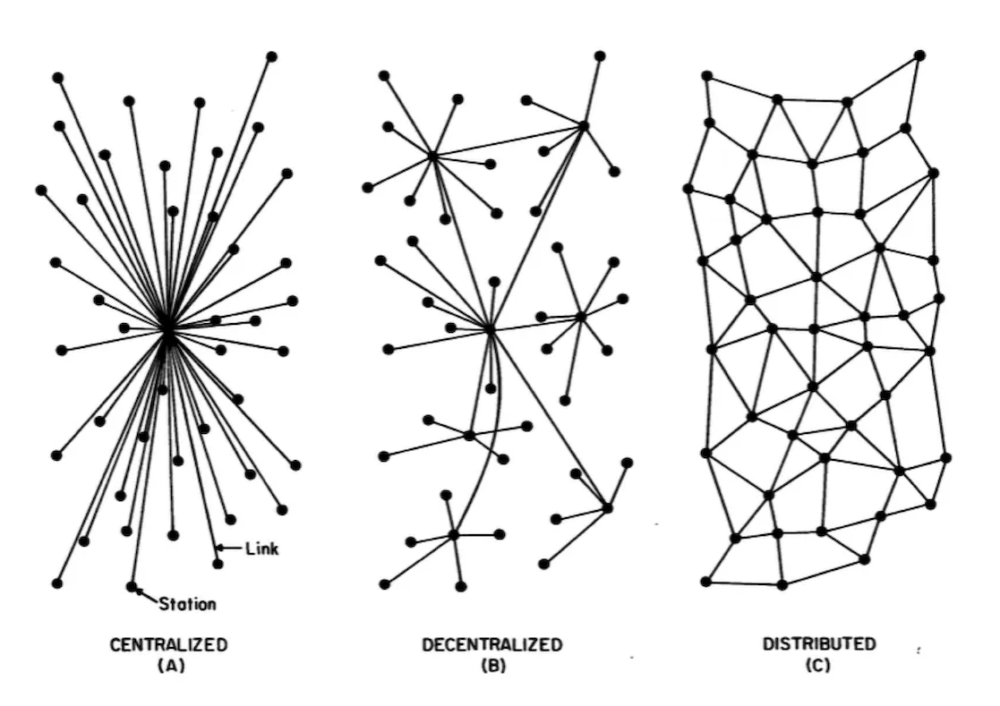A. CENTRALIZED SYSTEMS:
Example:
Wikipedia. Consider a massive server to which we send our requests and the server responds with the article that we requested. Suppose we enter the search term ‘junk food’ in the Wikipedia search bar. This search term is sent as a request to the Wikipedia servers (mostly located in Virginia, U.S.A) which then responds back with the articles based on relevance. In this situation, we are the client node, Wikipedia servers are the central server.Components of Centralized System –
- Node (Computer, Mobile, etc.).
- Server.
- Communication link (Cables, Wi-Fi, etc.).
Architecture of Centralized System –
- Client-Server architecture. The central node that serves the other nodes in the system is the server node and all the other nodes are the client nodes.
Use Cases –
- databases – all the data in one server for use.
- games like Need For Speed, GTA Vice City – an entire game in one system(commonly, a Personal Computer)
- development by deploying test servers leading to easy debugging, easy deployment, easy simulation
- Personal Computers
Organizations Using –
- National Informatics Center (India), IBM
B. DECENTRALIZED SYSTEMS:
Example –
Bitcoin. Let’s take Bitcoin for example because it is the most popular use case of decentralized systems. No single entity/organization owns the bitcoin network. The network is a sum of all the nodes who talk to each other for maintaining the amount of bitcoin every account holder has.Components –
- Node (Computer, Mobile, etc.)
- link (Cables, Wi-Fi, etc.)
Architecture of Decentralized System –
- architecture – all nodes are peers of each other. No one node has supremacy over other nodes
- architecture – One node can become a master by voting and help in coordinating of a part of the system but this does not mean the node has supremacy over the other node which it is coordinating.
Use Cases –
- Blockchain
- Decentralized databases – Entire databases split into parts and distributed to different nodes for storage and use. For example, records with names starting from ‘A’ to ‘K’ in one node, ‘L’ to ‘N’ in the second node, and ‘O’ to ‘Z’ in the third node Cryptocurrency
Organizations Using –
- Bitcoin, Tor network
C. DISTRIBUTED SYSTEMS:
Example –
Google search system. Each request is worked upon by hundreds of computers which crawl the web and return the relevant results. To the user, Google appears to be one system, but it actually is multiple computers working together to accomplish one single task (return the results to the search query).Components of Distributed System –
- Node (Computer, Mobile, etc.)
- link (Cables, Wi-Fi, etc.)
Architecture of Distributed System –
- peer-to-peer – all nodes are peers of each other and work towards a common goal
- – some nodes become server nodes for the role of coordinator, arbiter, etc.
- architecture – different parts of an application are distributed in different nodes of the systems and these nodes work together to function as an application for the user/client
Use Cases –
- SOA-based systems
- Multiplayer online games
Organizations Using –
- Apple, Google, Facebook.
Digital Signatures
How do digital signatures work?
Digital signatures are based on public key cryptography, also known as asymmetric cryptography. Using a public key algorithm, such as RSA (Rivest-Shamir-Adleman), two keys are generated, creating a mathematically linked pair of keys, one private and one public. Digital signatures work through public key cryptography's two mutually authenticating cryptographic keys. The individual who creates the digital signature uses a private key to encrypt signature-related data, while the only way to decrypt that data is with the signer's public key. If the recipient can't open the document with the signer's public key, that's a sign there's a problem with the document or the signature. This is how digital signatures are authenticated. Digital signature technology requires all parties trust that the individual creating the signature has kept the private key secret. If someone else has access to the private signing key, that party could create fraudulent digital signatures in the name of the private key holder.What are the benefits of digital signatures?
Security is the main benefit of digital signatures. Security capabilities embedded in digital signatures ensure a document is not altered and signatures are legitimate. Security features and methods used in digital signatures include the following: Personal identification numbers (PINs), passwords and codes. Used to authenticate and verify a signer's identity and approve their signature. Email, username and password are the most common methods used. Asymmetric cryptography. Employs a public key algorithm that includes private and public key encryption and authentication. Checksum. A long string of letters and numbers that represents the sum of the correct digits in a piece of digital data, against which comparisons can be made to detect errors or changes. A checksum acts as a data fingerprint. Cyclic redundancy check (CRC). An error-detecting code and verification feature used in digital networks and storage devices to detect changes to raw data. Certificate authority (CA) validation. CAs issue digital signatures and act as trusted third parties by accepting, authenticating, issuing and maintaining digital certificates. The use of CAs helps avoid the creation of fake digital certificates. Trust service provider (TSP) validation. A TSP is a person or legal entity that performs validation of a digital signature on a company's behalf and offers signature validation reports. Other benefits to using digital signatures include the following:Timestamping. By providing the data and time of a digital signature, timestamping is useful when timing is critical, such as for stock trades, lottery ticket issuance and legal proceedings. Globally accepted and legally compliant. The public key infrastructure (PKI) standard ensures vendor-generated keys are made and stored securely. Because of the international standard, a growing number of countries are accepting digital signatures as legally binding. Time savings. Digital signatures simplify the time-consuming processes of physical document signing, storage and exchange, enabling businesses to quickly access and sign documents. Cost savings. Organizations can go paperless and save money previously spent on the physical resources and on the time, personnel and office space used to manage and transport them. Positive environmental impact. Reducing paper use also cuts down on the physical waste generated by paper and the negative environmental impact of transporting paper documents. Traceability. Digital signatures create an audit trail that makes internal record-keeping easier for business. With everything recorded and stored digitally, there are fewer opportunities for a manual signee or record-keeper to make a mistake or misplace something.
How do you create a digital signature?
To create a digital signature, signing software, such as an email program, is used to provide a one-way hash of the electronic data to be signed. A hash is a fixed-length string of letters and numbers generated by an algorithm. The digital signature creator's private key is then used to encrypt the hash. The encrypted hash -- along with other information, such as the hashing algorithm -- is the digital signature. The reason for encrypting the hash instead of the entire message or document is a hash function can convert an arbitrary input into a fixed-length value, which is usually much shorter. This saves time as hashing is much faster than signing. The value of a hash is unique to the hashed data. Any change in the data, even a change in a single character, will result in a different value. This attribute enables others to use the signer's public key to decrypt the hash to validate the integrity of the data. If the decrypted hash matches a second computed hash of the same data, it proves that the data hasn't changed since it was signed. If the two hashes don't match, the data has either been tampered with in some way and is compromised or the signature was created with a private key that doesn't correspond to the public key presented by the signer -- an issue with authentication.Digital Certificate
Digital certificate is issued by a trusted third party which proves sender’s identity to the receiver and receiver’s identity to the sender. A digital certificate is a certificate issued by a Certificate Authority (CA) to verify the identity of the certificate holder. The CA issues an encrypted digital certificate containing the applicant’s public key and a variety of other identification information. Digital certificate is used to attach public key with a particular individual or an entity. Digital certificate contains:-- Name of certificate holder.
- Serial number which is used to uniquely identify a certificate, the individual or the entity identified by the certificate
- Expiration dates.
- Copy of certificate holder’s public key.(used for decrypting messages and digital signatures)
- Digital Signature of the certificate issuing authority.
Digital certificate vs digital signature :
Digital signature is used to verify authenticity, integrity, non-repudiation ,i.e. it is assuring that the message is sent by the known user and not modified, while digital certificate is used to verify the identity of the user, maybe sender or receiver. Thus, digital signature and certificate are different kind of things but both are used for security. Most websites use digital certificate to enhance trust of their users| # | Feature | Digital Signature | Digital Certificate |
|---|---|---|---|
| 1 | Basics/Definition | Definition Digital signature is like a fingerprint or an attachment to a digital document that ensures its authenticity and integrity. | Digital certificate is a file that ensures holder’s identity and provides security. |
| 2 | Process/Steps | Hashed value of original message is encrypted with sender’s secret key to generate the digital signature. | It is generated by CA (Certifying Authority) that involves four steps: Key Generation, Registration, Verification, Creation. |
| 3 | Security Services | Authenticity of Sender, integrity of the document and non-repudiation. | It provides security and authenticity of certificate holder. |
| 4 | Standard | It follows Digital Signature Standard (DSS). | It follows X.509 Standard Format |
Hash and encryption
Classes of Cryptographic Algorithms
Cryptographic algorithms can be categorized into three classes. This categorization is defined on basis of the number of cryptographic keys that are required for the algorithm.- Hash Functions
- Symmetric-Key Algorithms
- Asymmetric-Key Algorithms
1 Hash Functions
Hash functions are the building blocks for modern cryptography. A hash function is a cryptographic algorithm which is used to transform large random size data to small fixed size data. The data output of the hash algorithm is called hash value or digest. The basic operation of hash functions does not need any key and operate in a one-way manner. The one-way operation means that it is impossible to compute the input from a particular output. The basic uses of hash functions are:- Generation and verification of digital signatures
- Checksum/Message integrity checks
- Source integrity services via MAC
- Derivation of sub-keys in key-establishment protocols & algorithms
- Generation of pseudorandom numbers
Encryption is a two step process used to first encrypt and then decrypt a message, hashing condenses a message into an irreversible fixed-length value, or hash. Two of the most common hashing algorithms seen in networking are MD5 and SHA-1. Hashing is used only to verify data; the original message cannot be retrieved from a hash. used to authenticate secure communications, a hash is typically the result of the original message plus a secret key. Hashing algorithms are also commonly used without a secret key simply for error checking. You can use the md5sum and sha1sum utilities on a Linux or Unix machine to experiment with hashing.
2 Symmetric-key algorithms
Symmetric-key algorithms also referred as secret-key algorithms use a single cryptographic key for encryption and decryption purposes. They convert data in a way that is problematic for an opponent to decrypt the data without the key. Symmetric keys are securely generated and distributed to the sender and receiver and are unknown to any other entity. But if a symmetric-key algorithm is being used by more than one receiver then the key has to be shared with all entities. If the key is compromised from one entity, communication of all the entities will be compromised. Symmetric Algorithms are further divided into Block & Stream algorithms. A block algorithm breaks the input into fixed-size blocks and then progresses the crypto operations. Stream algorithms perform “bit-by-bit” crypto operations. Primary purposes of symmetric key algorithms are:- Confidentiality is achieved as encryption and decryption is performed using single key.
- Integrity and source authentication is achieved by using Message Authentication Codes because the MAC is generated and validated by the same key.
- Generation of pseudorandom random numbers
3 Asymmetric-key algorithms
Asymmetric-key algorithms are commonly referred to as “public-key algorithms”. They use two mathematically associated keys knows as public and private keys. One key is used for data encryption, and the other is used for decryption of data. The combination of a public and private key is called a key pair. The private key is always kept secret by the owner. The public key is distributed to the public and everyone can access it. The private key cannot be deduced from the public key. The public key is mostly bound to an identity by a Certificate Authority. Asymmetric-key algorithms are mostly based on mathematical problems like integer factorization and discrete logarithm problem. Main uses of asymmetric algorithms are:- Creation of digital signatures
- To establish/distribute session keys such as in case of TLS protocol
| Feature/Algorithm | Hash | Symmetric | Asymmetric |
|---|---|---|---|
| No. of Keys | 0 | 1 | 2 |
| NIST recommended key length | 256 bits | 128 bits | 2048 bits |
| Commonly used | SHA | AES | RSA |
| Key Management/Sharing | N/A | Big issue | Easy & Secure |
| Effect of Key compromise | N/A | Loss of both sender and receiver | Only loss for owner of asymmetric key |
| Speed | Fast | Fast | Relatively slow |
| Complexity | Medium | Medium | High |
| Examples | SHA-224, SHA-226, SHA-384 or SHA-512 | AES, Blowfish, Serpent, Twofish, 3DES and RC4 | RSA, DSA, ECC, Diffie-Hellman |
Merkle Tree
The same method for constructing a tree from four transactions can be generalized to construct trees of any size. In bitcoin it is common to have several hundred to more than a thousand transactions in a single block, which are summarized in exactly the same way, producing just 32 bytes of data as the single merkle root. In Figure 7-4, you will see a tree built from 16 transactions. Note that although the root looks bigger than the leaf nodes in the diagram, it is the exact same size, just 32 bytes. Whether there is one transaction or a hundred thousand transactions in the block, the merkle root always summarizes them into 32 bytes. 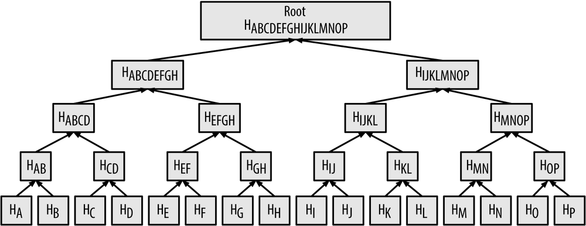
To prove that a specific transaction is included in a block, a node only needs to produce log2(N) 32-byte hashes, constituting an authentication path or merkle path connecting the specific transaction to the root of the tree. This is especially important as the number of transactions increases, because the base-2 logarithm of the number of transactions increases much more slowly. This allows bitcoin nodes to efficiently produce paths of 10 or 12 hashes (320–384 bytes), which can provide proof of a single transaction out of more than a thousand transactions in a megabyte-size block.
In the following figure, a node can prove that a transaction K is included in the block by producing a merkle path that is only four 32-byte hashes long (128 bytes total). The path consists of the four hashes (noted in blue in Figure 7-5) HL, HIJ, HMNOP and HABCDEFGH. With those four hashes provided as an authentication path, any node can prove that HK (noted in green in the diagram) is included in the merkle root by computing four additional pair-wise hashes HKL, HIJKL, HIJKLMNOP, and the merkle tree root (outlined in a dotted line in the diagram). 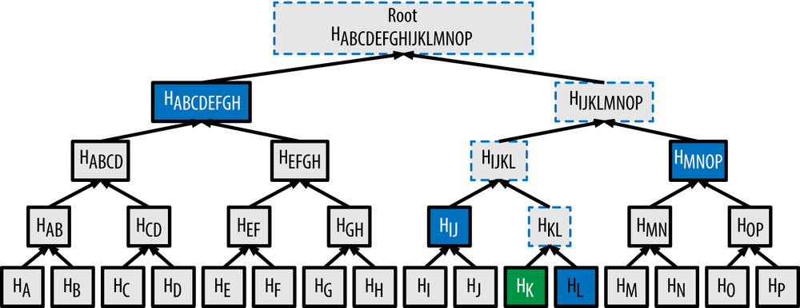
Merkle Patricia Trie — How Ethereum saves a state
Leaving aside the network part, we could say that Ethereum is a state machine where transactions modify states on the Ethereum network. A state can be expressed as a key-value pair. Although there are several ways of representing a key-value pair, the Ethereum specification defines the Modified Merkle Patricia Trie (a.k.a MPT) as the method to save states.
Basically, MPT is a combination of Patricia trie and Merkle tree, with few additional optimizations that fit the characteristics of Ethereum. Thus, an understanding of the Patricia trie and Merkle tree should precede the understanding of MPT.
Patricia Trie
Patricia trie is a data structure which is also called Prefix tree, radix tree or trie. Trie uses a key as a path so the nodes that share the same prefix can also share the same path. This structure is fastest at finding common prefixes, simple to implement, and requires small memory. Thereby, it is commonly used for implementing routing tables, systems that are used in low specification machines like the router.

Merkle Tree
Merkle tree is a tree of hashes. Leaf nodes store data. Parent nodes contain their children’s hash as well as the hashed value of the sum of their children’s hashes. Since all the nodes except for leaf nodes contain a hash, the Merkle tree is also known as a hash tree.
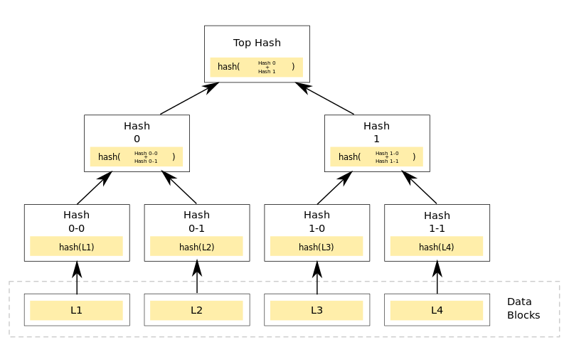 Finding out whether two different nodes have the same data or not can be efficiently done with the Merkle tree. You first have to compare the Top Hash value of the two nodes. If they are the same, then the two nodes have same data. For example, if you look at the picture above, when there are four nodes (L1, L2, L3, L4), you only need to check whether they have the same Top Hash or not. If the Top Hash is different and you want to know which data is different, you should compare Hash 0 with Hash1 and check which branch is different. By doing so, you will eventually find out which data is different.Merkle Patricia Trie
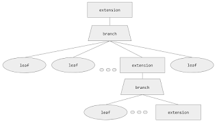In the MPT, as well as in the Merkle tree, every node has a hash value. Each node’s hash is decided by the sha3 hash value of its contents. This hash is also used as the key that refers to the node. Go-ethereum uses levelDB, and parity uses rocksDB to store states. They are key-value storages. Keys and values saved in the storage are not the key-values of the Ethereum state. The value that is stored in the storage is the content of MPT node while the key is the hash of this node.
Key-values of the Ethereum state are used as paths on the MPT. Nibble is the unit used to distinguish key values in the MPT, so each node can have up to 16 branches. Additionally, since a node has its own value, a branch node is an array of 17 items composed of 1 node value and 16 branches.
A Node that does not have a child node is called a leaf node. A leaf node consists of two items: its path and value. For example, let’s say the key “0xBEA” contains 1000 and the key “0xBEE” contains 2000. Then, there should be a branch node with the “0xBE” path, and, under that node, two leaf nodes with two paths (“0xA” and “0xE”) will be attached.
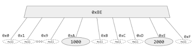In the MPT, there is one more type of nodes apart from the branch nodes and the leaf nodes. They are extension nodes. An extension node is an optimized node of the branch node. In the Ethereum state, quite frequently, there are branch nodes that have only one child node. This is the reason why the MPT compresses branch nodes that contain only one child into extension nodes that have a path and the hash of the child.
Since both the leaf node and the extension node are an array of two items there should be a way to distinguish these two different nodes. In order to make such distinction, the MPT adds a prefix to the path. If the node is a leaf and the path consists of even number of nibbles, you add 0x20 as a prefix. If the path consists of odd number of nibbles, you should add 0x3 as a prefix. If the node is an extension node and the path consists of even number of nibbles, you add 0x00 as a prefix. If it consists of odd number of nibbles, you should add 0x1 as a prefix. Because the path that consists of an odd number of nibbles gets a nibble as prefix and the path that consists of an even number of nibbles gets two nibbles as a prefix, a path is always expressed as a byte.
Bitcoin makes use of the Merkle tree to verify data integrity in the network. However, the Merkle tree only shows us the point at which the data was tampered as we store the combined hashes of all the leaf nodes. If at any point, some value is changed, it will reflect in the entire tree. However, Merkle tree does not provide what data was tampered with. This was achieved in Ethereum by making use of the Merkle Patricia Trie.
Why did Ethereum combine Merkle tree and Patricia trie?
- Ethereum combined the properties of a Merkle tree and a Patricia trie to create a modified Merkle Patricia trie.
- A Merkle tree can only be used to check whether a value is present in the tree or not.
- Patricia trie (Radix tree) is a data structure that stores values in key-value pairs. This is optimum in finding common prefixes of the searched value.
- These combined properties of both the trees creates a structure that is more optimum for storing and checking values.
In the Bitcoin Merkle tree, you can only verify whether a particular transaction has been tampered or not by checking its hash value. Ethereum uses the Merkle Patricia Trie to verify and check what exactly is tampered with.
Hash Cash
A hashcash stamp constitutes a proof-of-work which takes a parameterizable amount of work to compute for the sender. The recipient (and indeed anyone as it is publicly auditable) can verify received hashcash stamps efficiently. Hashcash was invented by Adam Back in 1997
At this point it is most widely used as the bitcoin mining function.
The email anti-spam tool, like the proof-of-work algorithm, is also called hashcash and is used to create
stamps to attach to mail to add a micro-cost to sending mail to deter spamming.
So, hash cash is basically a proof of work the sender of an email has to do before sending an email. The sender has to calculate the hash of the email data and make sure that the calculated hash satisfies a particular condition. This limts the scope of spam emails. Please keep this technique in mind. This is because this is now being used in Blockchain Technology for something known as mining of blocks.
The main use of the hashcash stamp is as a white-listing hint to help hashcash users avoid losing email due to content based and blacklist based anti-spam systems.Hashcash source code includes a library form, and also the algorithm is extremely simple to code from scratch with the availability of a hash library. Verification can be done by a human eye (count leading 0s) even with availability of common preinstalled command line tools such as sha1sum. The algorithm works with a cryptographic hash, such as SHA1, SHA256 or coming SHA3 that exhibits 2nd-preimage resistance. Note that 2nd-preimage resistance is a stronger hash property than the collision resistance property.
Layers Of a Blockchain
- A blockchain network has the following layers:
- Hardware Layer: The hardware layer can be a cloud or a server that hosts the entire network.
- Ledger or Fabric Layer: It forms the base of the blockchain network and constitutes of blocks also known as a ledger that hold the transaction data.
- Smart Contract or Logic Layer: It forms the business logic of the network and ensures that the network follows all the rules and regulations that govern the blockchain network.
- Interface layer: It is the set of API's that are used to communicate with the blockchain and get the required result such as retrieval of data, the addition of data etc.
- User Interface or Application Layer: This layer is the front end of the application and runs the entire network. It interacts with the rest of the layers.
Types of Consensus Algorithms
WHAT IS CONSENSUS ALGORITHM: To update the ledger, the network needs to come to consensus using an algorithm. Arriving at consensus on a distributed network means that everyone agrees on the current state of the ledger (e.g., how much money does each account have) and confirms that no one is double-spending their money. Coming to consensus is a computer science problem in fault-tolerant distributed systems. Generating a consensus means that multiple servers on the distributed network agree on the current truth state of the system, or in the basic Blockchain case, values in the ledger. Once the network computers reach a decision on a value, that decision is final. In the classical computer science context, consensus algorithms are used to agree on the commands in the logs of the distributed servers. In Blockchain networks, the three main kinds of consensus algorithms for arriving at consensus in a distributed manner are Proof of Work (POW), Proof of Stake (POS), and Practical Byzantine Fault Tolerance (PBFT). The main innovation of the Blockchain protocol is the Blockchain data structure on top of a consensus algorithm, which makes it possible to build an open distributed network in which all of the parties can reach agreement.
A consensus algorithm is like Bitcoin’s PoW (Proof-of-Work), which requires miners to solve complex cryptographic mathematical puzzles for which they get rewarded with certain amount of Bitcoins. It is important to understand that each block which is added to the network must follow a set of consensus rules. E.g. Bitcoin’s consensus rules are no double spending, correct format of blocks, a certain amount of reward for miners etc. Blocks that fail to follow these consensus rules will be rejected. A blend of PoW consensus algorithms and the consensus rules offers a strong and reliable network which is secure and ensures that all the nodes in the network agree on a regular global state of the blockchain.
Without a central intermediary, the network of participating users that develop this system need to agree on the validity of what’s being added to the ledger (using a set of predefined rules). A consensus needs to be reached for the majority of the nodes in the network. But just how effective it is to implement such a consensus remains a work in progress till today. The sole goal of the consensus protocol is to allow the node to communicate among themselves and offer a common set of the validated transaction which can be added to the ledger. This is designed to prevent unethical miners from adding false transactions and blocks. The type of mechanism to be used depends on the type of network. Let’s discuss few of the mechanisms.
We know that Blockchain is a distributed decentralized network that provides immutability, privacy, security, and transparency. There is no central authority present to validate and verify the transactions, yet every transaction in the Blockchain is considered to be completely secured and verified. This is possible only because of the presence of the consensus protocol which is a core part of any Blockchain network. A consensus algorithm is a procedure through which all the peers of the Blockchain network reach a common agreement about the present state of the distributed ledger. In this way, consensus algorithms achieve reliability in the Blockchain network and establish trust between unknown peers in a distributed computing environment. Essentially, the consensus protocol makes sure that every new block that is added to the Blockchain is the one and only version of the truth that is agreed upon by all the nodes in the Blockchain.
The Blockchain consensus protocol consists of some specific objectives such as coming to an agreement, collaboration, co-operation, equal rights to every node, and mandatory participation of each node in the consensus process. Thus, a consensus algorithm aims at finding a common agreement that is a win for the entire network.
There are various consensus algorithms used by different networks.
- Proof of Work (PoW): This consensus algorithm is used to select a miner for the next block generation. Bitcoin uses this PoW consensus algorithm. The central idea behind this algorithm is to solve a complex mathematical puzzle and easily give out a solution. This mathematical puzzle requires a lot of computational power and thus, the node who solves the puzzle as soon as possible gets to mine the next block.
- Byzantine Fault Tolerance (BFT): BFT name came from a solution to “Byzantine generals’ problem,” a logical dilemma that researchers Leslie Lamport, Robert Shostak and Marshall Pease explained in an academic paper. BFT is being used to fix the issue of a rogue or unreliable node. If any member of the community sends inconsistent information to others about transactions, the reliability of the blockchain breaks down, and there is no central authority that can step in to correct it. To solve this, PoW already offers BFT through its processing power. On the other hand, PoS needs a more definite solution. Nodes will regularly vote in order to identify the true transaction. Using a version of PoS which works with BFT looks like the most promising approach to approving transactions in the blockchain.
- Practical Byzantine Fault Tolerance (PBFT):
Practical Byzantine Fault Tolerance (PBFT) Hyperledger supports two consensus algorithms– Practical Byzantine Fault Tolerance algorithm (PBFT) and SIEVE, which is ready to handle non-deterministic chain code execution.
PBFT was the first solution to achieve consensus in case of Byzantine failure. Stellar, and Ripple also use PBFT mechanism.
In PBFT mechanism, each ‘general’ manages an internal state which is an ongoing information status.
After receiving a message, a general use the message in connection with their internal state to start a computation process. This computation process asks the individual general about the opinion on the message. After reaching a conclusion, the general shares the decision with other generals in the system. A consensus decision is made based on the total number of decisions submitted by all the generals. This approach forces a low overhead on the performance of the replicated service.
Practical Byzantine Fault Tolerance is a consensus algorithm introduced in the late 90s by Barbara Liskov and Miguel Castro. pBFT was designed to work efficiently in asynchronous(no upper bound on when the response to the request will be received) systems.It is optimized for low overhead time. Its goal was to solve many problems associated with already available Byzantine Fault Tolerance solutions. Application areas include distributed computing and blockchain.What is Byzantine Fault Tolerance? Byzantine Fault Tolerance(BFT) is the feature of a distributed network to reach consensus(agreement on the same value) even when some of the nodes in the network fail to respond or respond with incorrect information. The objective of a BFT mechanism is to safeguard against the system failures by employing collective decision making(both – correct and faulty nodes) which aims to reduce to influence of the faulty nodes. BFT is derived from Byzantine Generals’ Problem.
Byzantine Generals’ Problem: The problem was explained aptly in a paper by LESLIE LAMPORT, ROBERT SHOSTAK, and MARSHALL PEASE at Microsoft Research in 1982:Imagine that several divisions of the Byzantine army are camped outside an enemy city, each division commanded by its own general. The generals can communicate with one another only by messenger. After observing the enemy, they must decide upon a common plan of action. However, some of the generals may be traitors, trying to prevent the loyal generals from reaching an agreement. The generals must decide on when to attack the city, but they need a strong majority of their army to attack at the same time. The generals must have an algorithm to guarantee that (a) all loyal generals decide upon the same plan of action, and (b) a small number of traitors cannot cause the loyal generals to adopt a bad plan. The loyal generals will all do what the algorithm says they should, but the traitors may do anything they wish. The algorithm must guarantee condition (a) regardless of what the traitors do. The loyal generals should not only reach agreement, but should agree upon a reasonable plan.
Byzantine fault tolerance can be achieved if the correctly working nodes in the network reach an agreement on their values. There can be a default vote value given to missing messages i.e., we can assume that the message from a particular node is ‘faulty’ if the message is not received within a certain time limit. Furthermore, we can also assign a default response if the majority of nodes respond with a correct value.
Leslie Lamport proved that if we have 3m+1 correctly working processors, a consensus(agreement on same state) can be reached if atmost m processors are faulty which means that strictly more than two-thirds of the total number of processors should be honest. Types of Byzantine Failures:
There are two categories of failures that are considered. One is fail-stop(in which the node fails and stops operating) and
other is arbitrary-node failure. Some of the arbitrary node failures are given below :- Failure to return a result
- Respond with an incorrect result
- Respond with a deliberately misleading result
- Respond with a different result to different parts of the system
How pBFT works ? pBFT tries to provide a practical Byzantine state machine replication that can work even when malicious nodes are operating in the system.
Nodes in a pBFT enabled distributed system are sequentially ordered with one node being the primary(or the leader node) and others referred to as secondary(or the backup nodes). Note here that any eligible node in the system can become the primary by transitioning from secondary to primary(typically, in the case of a primary node failure). The goal is that all honest nodes help in reaching a consensus regarding the state of the system using the majority rule. A practical Byzantine Fault Tolerant system can function on the condition that the maximum number of malicious nodes must not be greater than or equal to one-third of all the nodes in the system. As the number of nodes increase, the system becomes more secure.
pBFT consensus rounds are broken into 4 phases(refer with the image below):
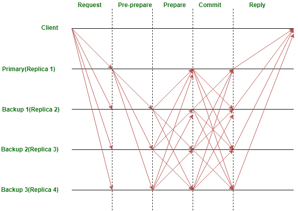- The client sends a request to the primary(leader) node.
- The primary(leader) node broadcasts the request to the all the secondary(backup) nodes.
- The nodes(primary and secondaries) perform the service requested and then send back a reply to the client.
- The request is served successfully when the client receives ‘m+1’ replies from different nodes in the
- network with the same result, where m is the maximum number of faulty nodes allowed.
The primary(leader) node is changed during every view(pBFT consensus rounds) and can be substituted by a view change protocol if a predefined quantity of time has passed without the leading node broadcasting a request to the backups(secondary). If needed, a majority of the honest nodes can vote on the legitimacy of the current leading node and replace it with the next leading node in line.
Limitations of pBFT:The pBFT consensus model works efficiently only when the number of nodes in the distributed network is small due to the high communication overhead that increases exponentially with every extra node in the network.Sybil attacks :pBFT mechanisms are susceptible to Sybil attacks, where one entity(party) controls many identities. As the number of nodes in the network increase, sybil attacks become increasingly difficult to carry out. But as pBFT mechanisms have scalability issues too, the pBFT mechanism is used in combination with other mechanism(s).Scaling :pBFT does not scale well because of its communication(with all the other nodes at every step) overhead. As the number of nodes in the network increase(increases as O(n^k), where n is the messages and k is the number of nodes), so does the time taken to respond to the request.Platforms using pBFT variants:- Zilliqa – pBFT in combination with PoW consensus
- Hyperledger Fabric – permissioned version of pBFT
- Tendermint – pBFT + DPoS(Delegated Proof-of-Stake)
- RBFT – Redundant BFT
- ABsTRACTs
- Q/U
- HQ – Hybrid Quorum Protocol for BFT
- Adapt
- Zyzzyva – Speculative Byzantine Fault Tolerance
- Aardvark
- SIEVE: SIEVE consensus mechanism is being used by Hyperledger Fabric which allows the network to detect and remove possible non-deterministic requests, and also achieve consensus on the output of the suggested transactions.
-
Proof of Stake (PoS):
This is the most common alternative to PoW. Ethereum has shifted from PoW to PoS consensus. In this type of
consensus algorithm, instead of investing in expensive hardware to solve a complex puzzle, validators invest
in the coins of the system by locking up some of their coins as stake. After that, all the validators will
start validating the blocks. Validators will validate blocks by placing a bet on it if they discover a block
which they think can be added to the chain. Based on the actual blocks added in the Blockchain, all the
validators get a reward proportionate to their bets and their stake increase accordingly.
In the end, a validator is chosen to generate a new block based on their economic stake in the network. Thus,
PoS encourages validators through an incentive mechanism to reach to an agreement.
As in case of PoW, a miner is rewarded by resolving mathematical problems and creating new blocks, in Proof-of- Stake, the creator of a new block is chosen in a deterministic way, depending on its wealth, also defined as stake. This means that in the PoS mechanism, there is no block reward. So, the miners take the transaction fees.
Ethereum was one of the largest cryptocurrencies to decide to move onto proof of stake consensus. Let’s understand this example a bit better. Let’s say we are miners and are validating the transactions made. In bitcoin, a person validates the transactions by computing the hash value with a certain number of leading zeros gets the allocated amount of bitcoins.
In proof of stake consensus, a validator is picked and assigned a block. The miner has to allocate a particular part of his cryptocurrency to start validating. If the miner succeeds in invalidating the transaction, then the award is the stake they had pledged initially, along with certain transaction fees. This is a way to penalize bad behavior and incentivize good behavior.
Properties:- The validators are picked according to their economic stake in the network.
- The objective is to avoid centralization of mining centers and provide a chance to validate to all the miners.
- It is environmentally friendly as there is no computational puzzle to be solved.
- Special hardware for mining is not required.
- In PoS, an attacker would need to possess greater than 50% of the currency to gain control over the network compared to 51% in PoW.
- One possible attack over a PoS consensus-based network is a bribe attack. This happens when the attacker reverses the victim’s transactions and bribes the miners for confirming the transactions.
- Delegated Proof-of-Stake (DPoS): DPoS is very different from PoS. Here, token holders don’t work on the validity of the blocks by themselves, but they select delegates to do the validation for them. In a DPoS system, there are usually in between 21–100 selected delegates. The selected delegates are being changed periodically and assigned an order to deliver their blocks. If you have less number of delegates, it allows them to organize themselves efficiently and create designed time slots to publish blocks. If the delegates miss their blocks on a regular basis or publish invalid transactions, the token holders vote them out and replace them with some other selected delegate. Unlike PoW and PoS, in DPoS miners can collaborate to develop blocks. With a collaborative effort and a partially centralized process, DPoS has been able to run orders of magnitude which are faster than any other consensus algorithms.
-
Proof of Burn (PoB):
With PoB, instead of investing into expensive hardware equipment, validators ‘burn’ coins by sending them to
an address from where they are irretrievable. By committing the coins to an unreachable address, validators
earn a privilege to mine on the system based on a random selection process. Thus, burning coins here means
that validators have a long-term commitment in exchange for their short-term loss.
Depending on how the PoB is implemented, miners may burn the native currency of the Blockchain application
or
the currency of an alternative chain, such as bitcoin. The more coins they burn, the better are their
chances
of being selected to mine the next block.
While PoB is an interesting alternative to PoW, the protocol still wastes resources needlessly. And it is also questioned that mining power simply goes to those who are willing to burn more money. - Proof-of-Weight (PoW): PoW is a wide classification of consensus algorithms based around the Algorand consensus model. When PoS, the percentage of tokens owned in the network presents a probability of “discovering” the next block, other relatively weighted value is being used. Filecoin’s Proof-of-Spacetime is weighted on how much IPFS data is being stored. There are few other systems include weights for things like Proof-of-Reputation.
-
Proof of Capacity(PoC):
In the Proof of Capacity consensus, validators are supposed to invest their hard drive space instead of
investing in expensive hardware or burning coins. The more hard drive space validators have, the better are
their chances of getting selected for mining the next block and earning the block reward.
This consensus algorithm mechanism is different from others. Here you pay for your hard disk space. The more hard disk space you have, the chances are high that you will mine the next block & earn rewards. Before mining in a PoC, the algorithm generates a large number of data sets known as ‘plots’, which you store on your hard drive. The more number of plots you have, you have better chances of finding the next block. To use this mechanism, you have to spend a lot on hard drive space. Burstcoin is the only cryptocurrency to use a form of proof of capacity. - Proof of Elapsed Time: PoET is one of the fairest consensus algorithms which chooses the next block using fair means only. It is widely used in permissionned Blockchain networks. In this algorithm, every validator on the network gets a fair chance to create their own block. All the nodes do so by waiting for random amount of time, adding a proof of their wait in the block. The created blocks are broadcasted to the network for others consideration. The winner is the validator which has least timer value in the proof part. The block from the winning validator node gets appended to the Blockchain. There are additional checks in the algorithm to stop nodes from always winning the election, stop nodes from generating a lowest timer value.
- Unique Node Lists (UNL): Ripple use “collectively trusted sub-networks” consensus algorithms called “Unique Node Lists”(UNL) to deal with high latency, which usually characterizes BFT-tolerant systems. To reach consensus, a node requires to ask its own UNL in place of the entire network. This mechanism allows less than one-fifth of its nodes being faulty.
- Proof-of-Activity (PoA): PoA was invented as an alternative incentive structure for Bitcoin miners. This combines both PoW & PoS. In PoA, miners start with a PoW approach to solve the puzzle. If the blocks mined don’t contain any transactions, the system switches to PoS. Based on the header information, a group of validators is assigned to sign the new block. If a validator owns more coin, he has the highest chance to be chosen. As soon as all the selected validators sign the template becomes a block. If the validators failed to complete the block, a new group of validators are being chosen, and this process goes on until a block receives the correct amount of signatures. Rewards are been divided between the miner and the validators. PoA requires too much energy like PoW, PoS. Decred is the only coin using Proof-of-Activity for validation right now.
There also exist other consensus algorithms like Proof of Importance,
Leased Proof of Stake, etc. It is therefore important to wisely choose one as per the business network
requirement because Blockchain networks cannot function properly without the consensus algorithms to verify
each and every transaction that is being commited.
Conclusion:
Consensus algorithms used by various blockchain platforms are mainly driven by the type of applications the
platform expects to offer and intimidations it conceives to the integrity of the chain. The permission less
platforms are reaching consensus among a very high number of untrusted peers using computational complexities.
While approved blockchains are opting for a less scalable but higher throughput model that assures faster
transactions. At the time of choosing the right consensus model for a particular network, various things are
being considered like intended network, the relationships between participants, and both functional and
non-functional aspects.
SUMMARY:
● Proof of Stake (PoS):
1. This algorithm states that a person or a node can mine blocks in the network according to how much stake
he/she
has in the network.
2. For example, in a Bitcoin network, the more Bitcoins a miner has, the more stake he has in the network. There
are
also more chances for that miner to confirm a new block.
● Delegate Proof of Stake (DPoS):
DPoS is a different mechanism of PoS to achieve consensus.
1. It states that each node will bid on a particular transaction where a bid is counted as a vote.
Whichever transaction/block gets the higher number of bids wins the race and is confirmed. Nodes which were
2. bidding in the whole process get back their rewards after the block is committed.
● Proof of Authority (PoA):
In Proof of Stake, the person who will commit the next block is chosen randomly based on the weight of his/her
stake in the network. Nodes which put their stake in the network are called stakeholders.
In Delegated Proof of Stake, all the stakeholders vote together to elect a node which will produce the next
block. The voting power of each node is decided according to the stake he/she has in the network.
1. In PoA, your identity is at stake in the network. A particular set of nodes are given the authority to commit blocks to the Blockchain.
2. The process of giving the authority can be a set of defined rules by the network. Anyone wanting to commit a transaction to the Blockchain can do it through the set of authorised nodes.
3. Proof of Authority strongly lacks decentralization.
4. By definition, Proof of Authority is a combination of decentralization and the efficiency given by centralization. Presently, this mining algorithm is used only on test networks or private Ethereum networks. Some testnets like Rinkeby and Ropsten use PoA as their mining algorithm.
● Practical Byzantine Fault Tolerance (PBFT):
1.In this type of consensus, a leader chosen by the other nodes gets to commit a transaction or a block.
2.The other nodes are called the secondary nodes. The leader node is chosen through a random algorithm till a given period of time.
Proof of work major challenges
Proof of work faces three major challenges:
- It is energy inefficient: In proof of work millions of miners try to mine one block, and only one miner is successful. Rest of the energy spent by the miners goes to waste.
- It is computationally heavy: Proof of work requires a lot of computation by the miners to mine one block successfully.
- 51% attack: In case more than 51% of the nodes in the network are malicious the network could become unstable.
Byzantine Generals problem
The Byzentine Generals problem occurs when a malicious node propagates wrong message or tampered transactions in the network that could compromise the security of data in the blockchain network. The blockchain network needs to be tolerant to such activities and needs to ensure that all the transaction data in the network is tamper free. Such networks are called as Byzentine Fault Tolerant Networks and they use the Byzentine fault tolerant consensus.
For a network to be byzantine fault tolerant the number of malicious nodes in the network should be less
that
1/3rd of the total nodes in the network. Whenever a node receives two conflicting messages, it goes for a
majority vote and accepts the message which comes from majority number of nodes. To ensure that the correct
message is accepted by the nodes in the network the total number of malicious nodes needs to less than
33.33%
or 1/3rd of the network. Proof-of-work is a BFT consensus mechanism provided the 51% attack and pool mining
does not happen.
To overcome the challenges faced by proof of work, there are other mechanisms being devised.
The proof of work is a very energy intensive mechanism and requires a lot of computational power. One one node comes out as a winner and rest all the energy used by other nodes is wasted in the proof of work mechanism. The evolution of consensus mechanisms is going and one of the methods to overcome the challenges of proof of work is to choose a leader node based on the stake in the network. It is very unlikely for a node to be malicious if it has the maximum stake in the network
Bitcoin Blockchain Network
Bitcoin blockchain network which was the first blockchain network created by Satoshi Nakamoto. Bitcoin was the first implementation of the blockchain and it has many use cases. In the bitcoin network, a transaction is performed between two nodes and the transaction is flooded across the entire network. All the nodes in the network validate the transaction and add it to their transaction pool in case the transaction is valid otherwise reject it. Each node has its own transaction pool that it maintains. All the transactions that are validated as valid are placed inside the transaction pool.
Bitcoin Record keeping
There are several methods in which records are maintained in networks. One of the basic methods is the Account/Balance model wherein balance related to every account is maintained. Bitcoin uses a different mechanism for record keeping.
Bitcoin uses the concept of unspent transaction output (UTXO) for record keeping. Every transaction in a bitcoin is based upon an unspent transaction output (UTXO). Whenever a transaction is performed in bitcoin, it primarily consumes existing UTXOs called as inputs and creates new UTXOs called outputs. The outputs generated from a transaction can be utilized further in the network by the node.
There are two ways to get the UTXO in a bitcoin network: Either from another node in the network or as a network reward. Let’s analyze a sample transaction in the network and see how the UTXO model works.
Each UTXO corresponds to a particular addreess i.e a particular public key. The corresponding private key is used to unlock and spend that UTXO. This private key corresponds to the owner of the UTXO which is required to unlock and spend that UTXO. Once spent, that UTXO is again locked with the public key of the new owner. Now since it is locked with the public key of the new owner, it requires the private key of the new owner to be unlocked and spent again.
Transaction fee is the fee paid to the miner over and above the reward it gets for mining the block. Try to answer the questions below to aid your understanding.
Genesis block
A genesis block is the first block of a block chain. Modern versions of Bitcoin number it as block 0,
though
very early versions counted it as block 1. The genesis block is almost always hardcoded into the software of the
applications that utilize its block chain. It is a special case in that it does not reference a previous block,
and for Bitcoin and almost all of its derivatives, it produces an unspendable subsidy.
The genesis block is the first block in any blockchain-based protocol. It is the basis on which additional
blocks are added to form a chain of blocks, hence the term blockchain.
This block is sometimes referred to Block 0. Every block in a blockchain stores a reference to the previous
block. In the case of Genesis Block, there is no previous block for reference.
In technical terms, it means that the Genesis Block has it’s “previous hash” value set to 0. This means that no
data was processed before the Genesis Block. All other blocks will have sequential numbers starting by 1, and
will have a “previous hash” set to the hash of the previous block.
The hash of genesis block is added to all new transactions in a new block. This combination is used to create
its unique hash. This process is repeated until all the new blocks are added to a blockchain.
The number used to refer to the ordering of blocks is known as the block height number. It starts at 0 with the
Genesis Block.
Bitcoin genesis block:
The most famous Genesis block was “Bitcoin Chain”, which was created by Satoshi Nakamoto on January 3rd. This
block has a 50-bitcoin reward that is unavailable forever. It is unclear, whether the Genesis Block reward was
mined or not, and Satoshi Nakamoto has made no comment.
A “coinbase transaction” is included with every block on the Bitcoin network. A coinbase transaction is the
first transaction a miner places in a block constructed by them; it is a transaction rewarding the miner in
Bitcoins for successfully creating a block to be relayed to the network.
Throughout the Genesis Block Bitcoin, a message was written forever by Satoshi in history. In the coinbase
transaction, with the usual block data, he added the following message :
“The Times 03/Jan/2009 Chancellor on brink of second bailout for banks”
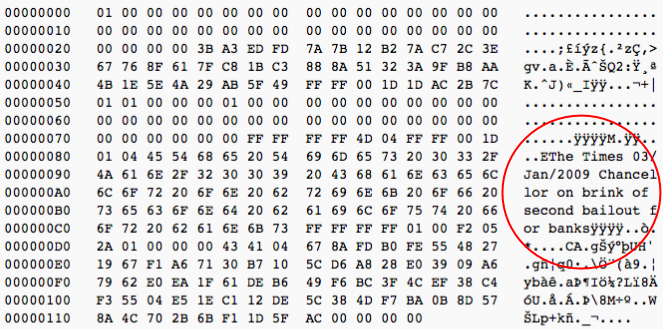
This message is a reference to a New York Times headline, which proves that the Bitcoin Genesis Block could not
have been created before that date. This proves that there was no pre-mining before that date, assuring fairness
in distribution.
There are many theories to why Satoshi used this specific headline. The most accepted one is that it is a
philosophical message, referring to 2008’s economic crisis and the subsequent bank bailouts.
Why Genesis Block is needed ?
Without Genesis Block, it would be really difficult for the miners to trust a blockchain and to know when and
how it started. This would be extremely impractical.
In theory, there is no real need for a Genesis Block. However, it is necessary to have a starting point that
everyone can trust.
As every physical chain must begin with a single physical ring, the Genesis Block is that first, single ring. Or
you could see it like the foundation of a building; it may collapse without a solid starting point. You could
also view it as the starting point in a race. If every miner just started wherever they wanted, you’d have no
consensus point and no basis for trust.
Genesis Block — Block data
The example taken here is the Bitcoin blockchain of the genesis block:
Number of transactions: 1
Transaction fee: $0.00
Block height: 0
Timestamp: 03/02/2009, 18:15
Nonce: 208393
Block difficulty: 1
Below you will find more information on block data, which is included in Genesis Block and in all others too.
Block height of a block is the number of blocks in the chain before that given block. Therefore the height of the Genesis block is 0 because no block was placed before it.
Blocks are numbered in a blockchain order. Note that several blocks can have the same height. This could be because of a fork on the network.
The height of a blockchain is the height of the highest block. The highest block in a blockchain is the latest block. For example, at the time of writing, the current block height number of 595130.
Timestamps are generally used to store the date and time of a given event. However, it is important to note that block timestamps are not exactly accurate, and they do not need to be. Block times are accurate only to within an hour or two. As a miner can change and fake the time of their computer, they are not trusted for chronology. They are simply a rough indicator of when the block was formed by the miner. Position of a block in the chain does not rely on timestamps.
Nonce or “number used only once” is the number that all miners around the globe are hoping to discover in order to validate a block and receive its mining bonus. Changing the nonce causes a change in the hash. Nonce only applies to blockchains that have a Proof of Work algorithm as consensus algorithm. Block difficulty is a number that regulates how long it can take for a miner to add a new block to the blockchain.
The difficulty is always fixed at a defined time interval, adjusted once every 2 weeks so that a block can be built at a fixed time interval. So there is a fixed time interval between constructing 2 blocks, which is approximately 10 minutes (in Bitcoin), set by the difficulty of the network. In technical terms, difficulty is a value that is used to demonstrate, how hard is it to find a hash that will be lower than the target characterized by the system.
Types of nodes
-
There are three types of nodes in the bitcoin blockchain network:
- Miner nodes: They create the blocks in the network
- Full nodes: They store the details of all the blocks in the network
- SPV nodes (simplified payment verification node): They are nodes that store only the partial details of the blocks in the network
Full nodes keep a complete copy of all the bitcoin blockchain with all the transactions. This copy is built by the full node itself from the beginning (genesis block) by verifying and adding independently all the transactions to it. So a full node independently and authoritatively verifies all the transactions by itself without having any need of external resources. This node receives from the network informations about new blocks and transactions but verifies independently any data received while adding them to the local copy of the blockchain.
This means that a full node gives you a complete independence from any centralization or external resource, giving you the possibility to access to the system authoritatively and without having to rely on external servers.
Obviously this comes with a price. Infact the full node needs to have a high amount of storage space for storing all the blockchain locally and enough resources to run all the needed verifications. At actual rate with a 2GB ram computer you may take a week for all the blockchain to be completely synced and verified locally by a new full node running the bitcoin core software. Infact only the genesis block is embedded into the software, all the other blocks are added to the local blockchain step by step while starting the node for the first time.
Many bitcoin clients are designed to run into smartphones, tables and machines with low resources and storage. For those devices a simplified payment verification system runs to allow them to operate without the full blockchain stored locally.
SPV nodes, infact, download the block headers only and exclude the transactions of each block. So they have a chain of blocks without transactions and this makes possible to have a resulting data amount stored locally over thousand times lower in size.
They rely on peers to provide parts of the blockchain when necessary. So how they can do to verify a transaction? They use the link between the transaction which they are interested in and the block that contains it, using the merkle path. To protect the spv node against the possibility of a double spending attack against the spv itself, the nodes must connect randomly to other different nodes to have the maximum probability to get correct informations. This is why, to be completely sure about a transaction, only a full node can be used.
It’s very important to consider this behavior can create a privacy risk. Why? because spv nodes must ask about specific transactions and this makes possible that some software agent which is monitoring the network can correlate the asked transactions to the user running the wallet.
In order to mitigate this risk, the bloom filter can be used by spv nodes. The bloom filters can ask for specific transactions matching a pattern rather then about a specific transaction. SPV nodes can therefore use such filters to filter transactions they receive from peers selecting only the needed informations and without having to disclose with address they are interested in. In any case using a SPV node instead of a full node gives the user a weaker privacy and security and therefore the use of such nodes must be evaluated on the base of the amount held on accounts connected. For higher held amount of bitcoin, that user plans to keep long time, it’s very important to use a dedicated full node connected with a TOR network connection in such a way to benefit of enhanced security and privacy for their funds.
Bitcoin Block Anatomy
Blocks are the fundamental components of the blockchain. The word "block" is an interesting way to think about the information it stores; but what a block actually is, might be a little different than what you expect. In this segment, we'll discuss what blocks are, and the various elements that are included in the block.
A blocks header is comprised of the following components:
- Merkle root - aggregation of all the hash values of the transactions into a single hash value.
- Timestamp - Timestamp of the block creation time.
- Nonce - Random Value that is altered/updated to try different permutations to achieve the required difficulty level. You will learn more about this in the upcoming section.
- Transaction counter - Count of the number of transactions in a block.
Mining in Bitcoin Blockchain
The process of mining means that a new block is created and added to the blockchain. Every miner creates a block from the transaction existing in its transaction pool.
- For a block to be valid and added to the network, the miner needs to solve a puzzle which is defined as
below in the case of bitcoin blockchain.
Hash of the block header < Value Hash of the header is the hash of all the data present in the header appended together. - In case the above condition is not met, the miners need to recompute the hash.
- To recompute the hash nonce is used whose value is changed in every iteration to arrive at a new hash. This is because all the other data in the block such as time stamp, Merkel root, number of transactions etc. are all fixed and can not be changed.
- To change the hash the only thing that can be changed is the nonce value. The difficulty to attain the acceptable hash in the network is termed as the difficulty of the network. Once the condition is satisfied, the block becomes a valid block.
- The miner who calculated a valid hash first is allowed to claim the creation of the block
A miner competes with other miners in the network to form a block. The miner which is able to first generate
a
block in the network is given a block reward. The block reward started from 50 BTC and currently, the miner
earns a block reward of 12.5 BTC for every block.
Once a block gets created it is propagated to the entire network and all the peers don’t add the block as
such
to their respective blockchains. Each peer node performs some validation on the incoming block.
The block header also contains a previous hash pointer of the block which precedes this block. Remember that blockchain is a chain of blocks that are connected by this previous hash pointer also known as the previous hash. The previous hash acts as a link between the blocks. Each node in the network checks whether the last block in its blockchain has the same hash as the previous hash pointer of the incoming block, it adds the block otherwise not.
Consensus Mechanism - Proof of work
The blockchain is a trustless environment where nobody has to trust each other, and there is no central authority to ensure trust between the transacting parties. So how does blockchain ensure that valid transaction performed in the network? Blockchain employs a set of validation checks known as consensus mechanism for the validity of transactions.
In the blockchain, mathematical algorithms are used to verify transactions and ensure trust between transacting parties. Transacting parties have to trust the output achieved using these mathematical algorithms. These algorithms together are known as the consensus mechanism in the blockchain. The consensus can for a transaction or for an entire block. The consensus for the transaction verification of transaction includes the checks for the following:
- Sender Balance
- Valid Authority
- Valid signatures
Hash(HDR) < Difficulty Level
The consensus mechanism is difficult to achieve and easy to verify. The
above-mentioned consensus mechanism is known as proof of work. In the proof of work consensus, miner
nodes
have to solve a computationally difficult problem to compute the hash for the current block. The network
sets
a difficulty target for the miners. This difficulty level plays a vital role in the consensus as well as
the
mining process.
The difficulty value, also known as the target value, sets the difficulty level of the network. The difficulty level is used to regulate the mining of blocks in the network. The bitcoin network has a block creation time set to 10 mins and this value has to be maintained. The difficulty value adjusts with every block creation such that the value of block creation remains constant.
The formula for calculation of difficulty level in bitcoin blockchain network is: Difficulty Level = (Previous Difficulty Level * 20160) / (Time taken to mine last 2016 block)In case the time taken for the last block is greater than 10, the new value of difficulty level is lower than the previous one such that the blocks are created faster. In case the time taken for the last block is less than 10, the new value of difficulty level is greater than the previous one such that the blocks are created slower.
Comprehension:In proof of work mechanism, the consensus is achieved using an algorithm. Let us suppose miner node have computed the hash of the current block and have published it to the entire network. All other nodes in the network follow a set of rules to validate a block. Once all of the nodes have checked the validity of the block and found it to be valid, they give their consensus and block is added to the blockchain. The functions performed while validating a node are given below:
- Check if block with same hash has already been received.
- Check if there is a block in the already existing blockchain whose hash is previous.hash (current block).
- Check if the hash of the current block satisfies the difficulty level.
- Check if the timestamp of the current block is greater than the timestamp of the previous block.
- Update the current state of the blockchain new block number = parent block number + 1.
- Broadcast updated blockchain to the network.
SPV nodes
The primary purpose of having SPV nodes is to validate the transactions without having computationally intensive machines. The SPV nodes just store the block headers and can validate whether a transaction is present in a block or not. They don’t have the entire blockchain data and use the Merkel Root to arrive at a conclusion regarding a transaction.
The use of SPV nodes is done due to the fact that proof of work is computationally heavy and requires a lot of resources by the nodes. This is one of the challenges that has prompted developers to think of alternative solutions to proof of work.
Byzantine Fault tolerance
What is Byzantine Fault Tolerance?
Byzantine Fault Tolerance(BFT) is the feature of a distributed network to reach consensus(agreement on
the
same value)
even when some of the nodes in the network fail to respond or respond with incorrect information.
The objective of a BFT mechanism is to safeguard against the system failures by employing collective
decision making(both – correct and faulty nodes) which aims to reduce to influence of the faulty nodes.
BFT is derived from Byzantine Generals’ Problem.
Byzantine Generals’ Problem:
The problem was explained aptly in a paper by LESLIE LAMPORT, ROBERT SHOSTAK, and MARSHALL PEASE at
Microsoft
Research in 1982:Imagine that several divisions of the Byzantine army are camped outside an enemy city,
each
division commanded by its own general. The generals can communicate with one another only by messenger.
After
observing the enemy, they must decide upon a common plan of action. However, some of the generals may be
traitors, trying to prevent the loyal generals from reaching an agreement. The generals must decide on
when
to
attack the city, but they need a strong majority of their army to attack at the same time. The generals
must
have an algorithm to guarantee that (a) all loyal generals decide upon the same plan of action, and (b)
a
small number of traitors cannot cause the loyal generals to adopt a bad plan. The loyal generals will
all
do
what the algorithm says they should, but the traitors may do anything they wish. The algorithm must
guarantee
condition (a) regardless of what the traitors do. The loyal generals should not only reach agreement,
but
should agree upon a reasonable plan.
Byzantine fault tolerance can be achieved if the correctly working nodes in the network reach an
agreement
on their values. There can be a default vote value given to missing messages i.e., we can assume that
the
message from a particular node is ‘faulty’ if the message is not received within a certain time limit.
Furthermore,
we can also assign a default response if the majority of nodes respond with a correct value.
Leslie Lamport proved that if we have 3m+1 correctly working processors, a consensus(agreement on
same
state)
can be reached if atmost m processors are faulty which means that strictly more than two-thirds of the
total
number of processors should be honest.
Types of Byzantine Failures:
There are two categories of failures that are considered.
One is fail-stop(in which the node fails and stops operating) and
other is arbitrary-node
failure. Some of the arbitrary node failures are given below :
- Failure to return a result
- Respond with an incorrect result
- Respond with a deliberately misleading result
- Respond with a different result to different parts of the system
Types of Blockchains
There are 4 types of blockchains
- Public Blockchain
- Permissioned Blockchain
- Private Blockchain
- Consortium Blockchain
Public permissionless Blockchains: A public permissionless blockchain is free for anyone to join or leave. A Bitcoin Blockchain is the best example of a public permissionless network. This type of network provides anonymity, immutability and transparency but compromises on efficiency. Bitcoin and Ethereum are public blockchains.
Permissioned Blockchains: A public permissioned blockchain is an intermediate between a private and a public network. It values efficiency and immutability more than transparency and anonymity. In such a blockchain, each participating member is aware of the identities of the other members in the network. For example, the Goods and Services Tax (GST) network in India would be the most suitable for a permissioned Blockchain since it is operated by known entities and all the participants are verified before they join the network.
However, none of the Blockchains mentioned above will be suitable for the India Lending Blockchain network. Permissionless Blockchains do not provide the identity of the participants and lack in efficiency. On the other hand, public permissioned Blockchains are exposed to the public at large, even though they restrict access, thus raising concerns over the security of the network, since they do not provide anonymity of the participants. So, in the case of a GST network, you would not want other taxpayers in the country to know the details of your tax filings.
Private Blockchains: A private blockchain is one which is operated and managed by a single entity. Blockchains of this type are generally applicable in the case of conglomerates where the parent company runs the network for the underlying group of companies. In such situations, they value efficiency more than anonymity, transparency and immutability. If we consider the India Lending Blockchain, then RBI could be considered the entity that has supreme authority over the entire network. However, this raises the question of a single entity being given too much power.
Consortium Blockchains: A consortium blockchain is largely similar to a private Blockchain, but it differs when you consider who controls or manages the network. Instead of concentrating all the power on a single entity, authority is distributed across two or more participants. This scenario is also suitable for the India Lending Blockchain where authority can be distributed between RBI and a few of the major banks so that benefits can be ensured for all the members.
Now, let us summarise the key differences between the various types of Blockchains.| Type | Anonymity | Transparency | Immutability | Efficiency | Confidentiality | Throughput | Finality Turnaroud Time (TAT) |
|---|---|---|---|---|---|---|---|
| Public | Yes | Yes | Yes | No | Low | Low | High |
| Permissioned | No | No | Yes | Yes | Medium | Low/Medium | Medium/High |
| Private | No | No | No | Yes | Very High | High | Very Low |
| Consortium | No | Partial | Yes | Yes | High | High | Low |
Smart Contract Evolution
Let us see, How and why smart contracts came into existence.
The very first version of blockchain was a state machine. It was just like an accounting ledger, where it
held
only the state of a node. Then came the thought that since these nodes are within a computer network, why
can't
there be a code, associated with all the nodes, that can run on its own based on a predefined logic. This
is how
smart contracts emerged.
To explain the reason behind the existence of on-chain smart contracts, let's take an example of two
different
schools, which will have different uniforms, different timings, different books and different rules, and each
school would want its students to follow its rules only, not the others.
Extending the same analogy to a blockchain, each chain would want its nodes to adhere to the norms set on
that
particular network and all the nodes in the network to hold the same logic.
In on-chain smart contracts, any external data that is required for the smart contract would be fetched by
agents called oracles. Oracles are external agents that connect the smart contract to the external world.
In the previous video, we discussed smart contracts and oracles. Now, there was a major shortcoming with the
concept discussed: the smart contracts had to be deployed on each node of the network.
Smart contracts underwent evolution because:
- Enterprises wanted to eliminate the need to run the smart contract on all the nodes separately;
- Enterprises wanted, as a feature for their networks, interoperability within or outside them, without compromising the confidentiality of their inter-operations.
The only connection between the network and the outside world was oracles, which could sometimes get corrupt or hacked.
To avoid compromising confidentiality, a separate layer to hold the business logic of smart contracts was envisioned, owing to the demand of the enterprises, and it was called cryptlets. 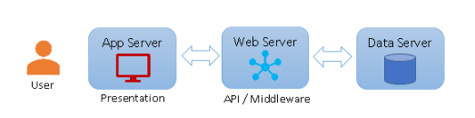
Like APIs in a three-layer network architecture, there is cryptlet fabric, which serves the same purpose in a
computer network. Cryptlets are of the following two types:
- Utility Cryptlets
- Contract Cryptlets
There are several developments around IDEs and UI tools for the development of smart contracts. These developments offer the promise that blockchains are set to evolve to a better state as we go ahead.
Blockchain Architecture
Ethereum Architecture
The Blockchain network can be broadly classified into the following layers:
- Storage layer: Any kind of data created can be stored in a basic file system or a database. Usually, Ethereum uses databases such as LevelDB or RockDB to store the state of the whole network and other data.
- Network layer: Information like transactions are sent from one node to another in a Blockchain network. This can be done using different messaging protocols. In Ethereum, we use a protocol called JSON - RPC to communicate between nodes.
- Protocol layer: Data and network layers are present in any normal network. How do we make out the difference between any network and a Blockchain network? This is defined by the protocol layer. This layer is majorly composed of the consensus protocols of the Blockchain network.
- Application layer: This is the layer which differentiates between Bitcoin and Ethereum. The application layer defines the various kinds of conditions that can be written on top of the three layers for any particular application. It includes smart contracts which define what your application logic can be.
Ethereum Accounts
An Ethereum account is an entity with an ether (ETH) balance that can send transactions on Ethereum.
Accounts
can be user-controlled or deployed as smart contracts.
Ethereum is a state transition machine. Accounts in Ethereum are stored in a global 'shared state' in the form
of key-value pairs. The list of all these key-value pairs representing accounts defines the state of Ethereum at
that point. In a key-value pair,
the key is a 20-byte string which is usually the public key of the
account.
Value, on the other hand, represents the state of the account.
Value is a structure with four values:
- Nonce: If the account is an externally owned account, this number represents the number of transactions sent from the account’s address. If the account is a contract account, the nonce is the number of contracts created by the account.
- StorageRoot(Storage Hash): This is a hash of the root node of a Merkle tree that encodes the hash of the storage contents of an account.
- CodeHash: This is the hash of the EVM (Ethereum Virtual Machine ) code of this account. For contract accounts, this is the code that gets hashed and stored as the codeHash. For externally owned accounts, the codeHash field is the hash of the empty string.
- Balance : This is the number of Wei owned by an address. There are 10^18 Wei per Ether.
ACCOUNT TYPES
There are two types of accounts in Ethereum:
- Externally owned Accounts : which are controlled by private keys and have no code associated with them.
- Contract Accounts / Internal Accounts: which are controlled by their contract code and have a code associated with them.
Key differences
Externally-owned Account
Creating an account costs nothing Can initiate transactions Transactions between externally-owned accounts can only be ETH/token transfersContract Account
Creating a contract has a cost because you're using network storage Can only send transactions in response to receiving a transaction Transactions from an external account to a contract account can trigger code which can execute many different actions, such as transferring tokens or even creating a new contractEthereum accounts have four fields:
1.nonce –
a counter that indicates the number of transactions sent from the account. This ensures transactions are only processed once. In a contract account, this number represents the number of contracts created by the account2.balance –
the number of wei owned by this address. Wei is a denomination of ETH and there are 1e+18 wei per ETH.3.codeHash –
this hash refers to the code of an account on the Ethereum virtual machine (EVM). Contract accounts have code fragments programmed in that can perform different operations. This EVM code gets executed if the account gets a message call. It cannot be changed unlike the other account fields. All such code fragments are contained in the state database under their corresponding hashes for later retrieval. This hash value is known as a codeHash. For externally owned accounts, the codeHash field is the hash of an empty string.4.storageRoot –
Sometimes known as a storage hash. A 256-bit hash of the root node of a Merkle Patricia trie that encodes the storage contents of the account (a mapping between 256-bit integer values), encoded into the trie as a mapping from the Keccak 256-bit hash of the 256-bit integer keys to the RLP-encoded 256-bit integer values. This trie encodes the hash of the storage contents of this account, and is empty by default.The codehash in the value of the account contains code only when it represents a contract account. For an externally owned account, since there is no code, codehash is a hash of the empty string and, hence, all EOAs will have same empty codehash.

Interaction of ethereum accounts with Smart contracts
- An EOA(Externally Externally-owned account) can send messages to other EOAs or to other CAs(Contract Account) by creating and signing a transaction using its private key.
- A message between two EOAs is simply a value transfer.
- But a message from an EOA to a CA activates the CA’s code, allowing it to perform various actions (e.g. transfer tokens, write to internal storage, mint new tokens, perform some calculation, create new contracts, etc.).
- Unlike EOAs, the CAs cannot initiate new transactions on their own.
- Instead, CAs can only fire transactions in response to other transactions they have received (from an externally owned account or from another contract account).
- An action that occurs on the Ethereum blockchain is always set in motion by transactions fired from externally controlled accounts.
the state of the Ethereum is a collection of key-value objects representing accounts. So, whenever a new block
is created, a state root is stored in the header of that block. State root is the Merkle root of all the
accounts at that moment. In simple terms, all the key-value pairs which represent accounts together form a
Merkle tree, and the root of that Merkle tree is known as state root. This state root is captured by a block at
the time of its creation. If someone tampers with the data, then that user would have to calculate the Merkle
root all over again such that the Merkle tree root matches the state root in the block. This is highly
impossible and, hence, maintains the immutability feature of the Blockchain.
Along with the state root, the transaction root and receipts root are also used to capture the state of the
network in every block. Hence, we can conclude that Ethereum captures the network state every time a new block
is created, and it captures the network state by calculating and storing the above three roots in the created
block.
Transactions in Ethereum
- nonce: A count of the number of transactions sent by the sender.
- gasPrice: The number of Wei that the sender is willing to pay per unit of Gas required to execute the transaction.
- gasLimit: The maximum amount of gas that the sender is willing to pay for executing this transaction
- to: The address of the recipient. In a contract-creation transaction, an empty value is used.
- value: The amount of Wei to be transferred from the sender to the recipient. In a contract-creating transaction, this value serves as the starting balance within the newly created contract account.
- v, r, s: Used to generate the signature that identifies the sender of the transaction.
- init: An EVM code fragment that is used to initialize the new contract account.
- data: The input data (i.e., parameters) of the message call. Every type of transaction has all the above components.
Different types of transactions in Ethereum
- Message Calls: These are the internal transactions from EOA to CA or from one CA to some other CA. When one contract sends a message to another contract, the associated code that exists on the recipient contract account is executed.
- Value Transfer: Transfer from one EOA to another EOA.
- Contract Creation Calls: They are initiated by EOAs, and the recipient's address is kept empty. Such transactions create a new contract account and, hence, are used to create and install new Ethereum contracts.
Ether
To understand Ethereum at a granular level, you need to understand its core components like the network currency, the transaction process, how a block is added to the network and many more. Let’s start by looking at Ether and Gas - the cryptocurrency and transaction cost of the Ethereum network, respectively. Let’s delve deep into the core components: Ether and Gas.
- Ether is the currency internal to Ethereum used to pay transaction fees to miners.
- Don’t confuse this with rewards and transaction fees. Those are two separate entities.
- A miner is rewarded when its block gets selected in the blockchain. However, a miner is not only rewarded on mining the block successfully but also receives a transaction fee for each transaction in the block that it mines.
- Rewards are given by the system or the Blockchain while the transaction fee is paid by the user who performed that transaction.
- In Ethereum, there is a defined process to calculate the transaction fee. For example if current Ether reward for mining a block is 2 Ethers. Hence, on mining a block, a miner receives 2 Ethers + the transaction fee for each transaction in the block.
Gas
Gas refers to the unit that measures the amount of computational effort required to execute specific operations
on the Ethereum network.
Since each Ethereum transaction requires computational resources to execute, each transaction requires a fee.
Gas refers to the fee required to conduct a transaction on Ethereum successfully.

What Is Ethereum Gas?
Gas is the fee a user pays to process a transaction on the Ethereum blockchain. Gas prices are denominated in
“gwei,” which is a denomination of Ethereum’s native currency, ether (ETH). 1 gwei, also known as a nanoether,
is equal to 0.000000001 ETH.
When you pay gas to submit a transaction, you are paying for the computational energy needed to power the
validation of that transaction on Ethereum. As the Ethereum 1.0 network is a proof-of-work system, this
computation currently comes courtesy of “miners,” who use special hardware to compete for ordering and
processing transaction-filled Ethereum blocks. In exchange for their service, miners can earn ETH block rewards
and transaction fees via gas payments.
Note: Ethereum 2.0 is starting in late 2020/early 2021, which will transition the blockchain into a
proof-of-stake system. This shift will phase out mining in favor of staking, at which point stakers who deposit
ETH will compete for block rewards and gas fees, not miners.
Additionally, different types of activities on Ethereum will have different gas costs. It’s cheaper to
straightforwardly send ETH or an Ethereum-based ERC20 token from one wallet to another than to perform more
complex interactions with smart contracts or to process a meta-transaction composed of many transactions. Simply
put, gas costs rise in accordance with the complexity of on-chain activity.
Who Sets Ethereum Fees
Two common misconceptions around Ethereum gas fees is that they’re either 1) set by developers, or 2) set by
miners. Neither is true.
Instead, Ethereum users send transactions with requested gas prices and then miners choose which transactions
they want to mine into a block. In this sense, Ethereum gas prices are dynamic and the result of an equilibrium
being reached between what users bid and what miners accept on a rolling basis.
As such, it follows that the more transactions users are requesting at any given time, the more expensive gas
prices will be as blockspace becomes increasingly scarce. In extension, transactions sent at higher gas prices
will be processed faster than transactions sent at lower prices.
Specifically, you can compute the cost of an Ethereum transaction fee at any time by multiplying the current gas
price by the current Ethereum gas limit (i.e. gas price * gas limit = transaction cost).
What Is the Ethereum Gas Limit?
A key component of the Ethereum gas system is the Ethereum gas limit. In the context of transactions, the
gas
limit is the maximum amount of gas units you are willing to spend on a transaction. This ceiling is used to
ensure transactions are executed, and since you won’t always pay the maximum amount, any unused ETH is
returned
to your wallet.
For basic ETH transactions, a standard gas limit is 21,000. So for example, let’s consider a hypothetical
generic transaction sent when the gas price is 100 gwei. We can compute this transaction’s cost by
multiplying
21,000 (gas limit) x 100 (gas price) x 0.000000001 (gwei denomination), with the result being 0.0021 ETH.
Relatedly, gas limits for ERC20 token transfers can range from 25,000 to as high as 500,000.
The transaction fee is calculated by measuring the amount of computational power spent by a miner in running
that particular transaction.
These computational cycles are measured in a unit called Gas. In other words, Gas is the unit used to measure
the fees required for a computation.
For each Gas that the miner spends to run a transaction, it is paid in Ethers. This is called the Gas Price.
So, gas price is the number of Ethers paid per unit of Gas spent by the miner for running a transaction. This
gas price is paid by the sender of the transaction to the miner. Gas price is measured in the unit Gwei. Just
like Bitcoin, Ether also has multiple denominations. The smallest unit in Ether is Wei.
1 Gwei = 10^9 Wei.
1 Ether = 10^18 Wei.
We learnt about Gas and Gas price. How does Ethereum ensure that the miner is not spending more Gas than
required?
The answer is Gas Limit. The Gas Limit for a transaction is defined as the maximum amount of Gas required
to run
a particular transaction. Hence, the transaction limit = Gas Limit x Gas Price.
- Gas price and Gas limit are set by the sender for every transaction.
- If excess Gas remains, it is returned to the sender.
- And if all the Gas is consumed before the transaction is completed, then the transaction fails due to the shortage of Gas and no Gas is returned to the sender.
- Hence, the calculations to gauge how much Gas would be needed for each transaction need to be done correctly, else your transaction would fail and you would also lose the Gas that you sent with the transaction.
- Gas is not only used to pay for computation steps, it is also used to pay for storage use. So, a sender also needs to pay a fee for storage use.
PRIOR TO THE LONDON UPGRADE
The way transaction fees on the Ethereum network were calculated changed with the London Upgrade of August 2021. Here is a recap of how things used to work:
Let's say Alice had to pay Bob 1 ETH. In the transaction, the gas limit is 21,000 units, and the gas price is 200 gwei.
Total fee would have been: Gas units (limit) * Gas price per unit i.e 21,000 * 200 = 4,200,000 gwei or 0.0042 ETH
When Alice sent the money, 1.0042 ETH would be deducted from Alice's account. Bob would be credited 1.0000 ETH. Miner would receive 0.0042 ETH.
AFTER THE LONDON UPGRADE
The London Upgrade was implemented on August 5th, 2021, to make transacting on Ethereum more predictable for users by overhauling Ethereum's transaction-fee-mechanism. The high-level benefits introduced by this change include better transaction fee estimation, generally quicker transaction inclusion, and offsetting the ETH issuance by burning a percentage of transaction fees.
Starting with the London network upgrade, every block has a base fee, the minimum price per unit of gas for inclusion in this block, calculated by the network based on demand for block space. As the base fee of the transaction fee is burnt, users are also expected to set a tip (priority fee) in their transactions. The tip compensates miners for executing and propagating user transactions in blocks and is expected to be set automatically by most wallets.
Calculating the total transaction fee works as follows: Gas units (limit) * (Base fee + Tip)
Let's say Jordan has to pay Taylor 1 ETH. In the transaction, the gas limit is 21,000 units and the base fee is 100 gwei. Jordan includes a tip of 10 gwei.
Using the formula above we can calculate this as 21,000 * (100 + 10) = 2,310,000 gwei or 0.00231 ETH.
When Jordan sends the money, 1.00231 ETH will be deducted from Jordan's account. Taylor will be credited 1.0000 ETH. Miner receives the tip of 0.00021 ETH. Base fee of 0.0021 ETH is burned.
Additionally, Jordan can also set a max fee (maxFeePerGas) for the transaction. The difference between the max fee and the actual fee is refunded to Jordan, i.e. refund = max fee - (base fee + priority fee). Jordan can set a maximum amount to pay for the transaction to execute and not worry about overpaying "beyond" the base fee when the transaction is executed. Block size Before the London Upgrade, Ethereum had fixed-sized blocks. In times of high network demand, these blocks operated at total capacity. As a result, users often had to wait for high demand to reduce to get included in a block, which led to a poor user experience.
The London Upgrade introduced variable-size blocks to Ethereum. Each block has a target size of 15 million gas but, the size of blocks will increase or decrease in accordance with network demand, up until the block limit of 30 million gas (2x the target block size). The protocol achieves an equilibrium block size of 15 million on average through the process of tâtonnement. This means if the block size is greater than the target block size, the protocol will increase the base fee for the following block. Similarly, the protocol will decrease the base fee if the block size is less than the target block size. The amount the base fee is adjusted by is proportional to how far from the current block size is from the target. More on blocks.
Base fee :
Every block has a base fee which acts as a reserve price. To be eligible for inclusion in a block the offered price per gas must at least equal the base fee. The base fee is calculated independently of the current block and is instead determined by the blocks before it - making transaction fees more predictable for users. When the block is mined this base fee is "burned", removing it from circulation.
The base fee is calculated by a formula that compares the size of the previous block (the amount of gas used for all the transactions) with the target size. The base fee will increase by a maximum of 12.5% per block if the target block size is exceeded. This exponential growth makes it economically non-viable for block size to remain high indefinitely.
Ethereum Block Anatomy
- The block header
- The set of transactions included in that block
- A set of other block headers for the current block’s ommers.
A block header in Ethereum is quite similar to a block’s in Bitcoin, and apart from components like Parent Hash, nonce, Difficulty, mix hash, Timestamp, it also contains Gas used to mine that block and the Gas limit defined for that block. Every block header also contains three important Trie structures for:
- 1. state (state Root): Merkle root of the current state of all the accounts
- 2. transactions (transactions Root): Merkle root of all the transactions mined in that block
- 3. receipts (receipts Root): Merkle root of the receipts for all the transactions in that block. A receipt is issued by the network/system whenever a transaction is committed; hence, the receipts for all the transactions in the block will form a Merkle tree, and its root is called the receiptsRoot.
- Nonce: This is a simple iterator of the account which signifies how many transactions has been done in the past. If account A is doing its fifth transaction, the nonce will be 5.
- Balance: This is the current balance of the Ethereum account. Example: 10 Ethers is the balance of account A.
- Storage root: It stores the hash of all the contract data present in the account.
- Codehash: Ethereum has two types of accounts as seen in the earlier segments: Externally Owned Accounts (EOA) and Contract Accounts (CA). For a CA, codehash contains the bytecode of the smart contract deployed on the network. For an EOA, it is not applicable.
These three roots together define the state of the Blockchain network at any given time. Whenever a new block is created, the network state is captured using these three roots. Hence, we can say that at the creation of every new block, the network state changes and the new state is defined by state Root, transaction Root and receipts Root at that instance.
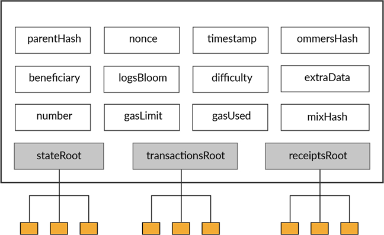
Let us visualise the ethereum Account storage Trie.
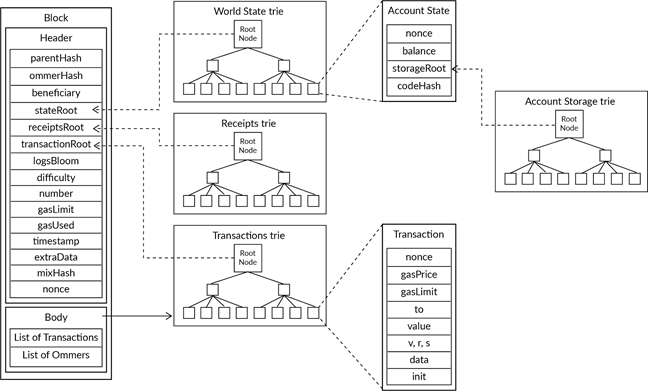
One major difference between Bitcoin and Ethereum is that Ethereum stores the states of all the accounts and Bitcoin follows a UTXO model. This is called the world state of Ethereum. The world state is composed of individual states of all the accounts.
The account state has the following components:
Consensus in Ethereum
It is not necessary for a network to be Byzantine fault tolerant. To get fault tolerant from dishonest nodes, you must implement certain rules or protocols which make up the consensus of the network. Few of the consensus algorithms can be Proof of Work, Proof of Stake, Delegate Proof of Stake and Proof of Authority.
Recall that in PoW algorithm, The miner needs to calculate a hash which is lower than the difficulty level defined by the system, and the first miner to find such hash is declared the winner and its block is accepted.
This can be a highly computation intensive problem, which cannot be solved by everyone.
Let’s try to understand Proof of Work in Ethereum by trying to think about the following questions:
- Why is Bitcoin’s implementation of Proof of Work highly computation intensive?
- How did Proof of Work in Bitcoin create a bias towards certain miners having powerful machines?
- What did Ethereum change in Proof of Work to make mining fairer and give everyone an equal chance to mine?
- Vitalik Buterin proposed a different Proof of Work implementation for Ethereum called Ethash. How is it different from Bitcoin’s Proof of Work?
- Why did Ethereum want more miners to participate in the mining process?
Oracles
Blockchain Oracles Explained
What is a blockchain oracle?
Blockchain oracles are third-party services that provide smart contracts with external information. They serve as bridges between blockchains and the outside world. Blockchains and smart contracts cannot access off-chain data (data that is outside of the network). However, for many contractual agreements, it is vital to have relevant information from the outside world to execute the agreement.
This is where blockchain oracles come into play, as they provide a link between off-chain and on-chain data. Oracles are vital within the blockchain ecosystem because they broaden the scope in which smart contracts can operate. Without blockchain oracles, smart contracts would have very limited use as they would only have access to data from within their networks.
It’s important to note that a blockchain oracle is not the data source itself, but rather the layer that queries, verifies, and authenticates external data sources and then relays that information. The data transmitted by oracles comes in many forms – price information, the successful completion of a payment, or the temperature measured by a sensor.
To call data from the outside world, the smart contract has to be invoked, and network resources have to be spent. Some oracles also have the ability to not only relay information to smart contracts but to send it back to external sources.
Many different types of oracles exist – how a blockchain oracle operates is entirely dependent on what it is designed for. This article will go through some of those designs.
Example of a blockchain oracle:
Suppose that Alice and Bob place a bet on who the winner of the US presidential election will be. Alice believes that the Republican candidate will win, while Bob believes that the Democrat will be the winner. They agree on the terms of the bet and lock their funds in a smart contract, which will release all the funds to the winner based on the results of the election.
Since the smart contract cannot interact with external data, it has to depend on an oracle to feed it the necessary information – in this case, the results of the presidential election. After the election is over, the oracle queries a trusted API to find out which candidate has won and relays this information to the smart contract. The contract then sends the funds to Alice or Bob, depending on the outcome. Without the oracle relaying the data, there would have been no way to settle this bet in a way that couldn’t be gamed by one of the participants.
What are the different types of blockchain oracles?
Blockchain oracles can be classified depending on a number of different qualities:
- Source – does the data originate from software or hardware?
- Direction of information – is it inbound or outbound?
- Trust – is it centralized or decentralized?
A single oracle can fall into multiple categories. For example, an oracle that sources information from a company website is a centralized inbound software oracle.
Software oracles:
Software oracles interact with online sources of information and transmit it to the blockchain. This information can come from online databases, servers, websites – essentially, any data source on the Web.
The fact that software oracles are connected to the Internet not only allows them to supply information to smart contracts but also to transmit that information in real-time. This makes them one of the most common types of blockchain oracles.
Information typically provided by software oracles can include exchange rates, digital asset prices, or real-time flight information.
Hardware oracles
Some smart contracts need to interface with the real world. Hardware oracles are designed to get information from the physical world and make it available to smart contracts. Such information could be relayed from electronic sensors, barcode scanners, and other information reading devices.
A hardware oracle essentially “translates” real-world events into digital values that can be understood by smart contracts.
An example of this could be a sensor that checks if a truck transporting goods has arrived at a loading bay. If it does, it relays the information to a smart contract that can then execute decisions based on it.
If you’d like to read more on a similar subject, check out Blockchain Use Cases: Supply Chain. Inbound and outbound oracles Inbound oracles transmit information from external sources to smart contracts, while outbound oracles send information from smart contracts to the external world.
An example of an inbound oracle is one that tells a smart contract what the temperature is measured by a sensor. An example of an outbound oracle can be considered with a smart lock. If funds are deposited to an address, the smart contract sends this information through an outbound oracle to a mechanism that unlocks the smart lock.
Centralized and decentralized oracles:
A centralized oracle is controlled by a single entity and is the sole provider of information for the smart contract. Using only one source of information can be risky – the effectiveness of the contract depends entirely on the entity controlling the oracle. Also, any malicious interference from a bad actor will have a direct impact on the smart contract. The main problem with centralized oracles is the existence of a single point of failure, which makes the contracts less resilient to vulnerabilities and attacks.
Decentralized oracles share some of the same objectives as public blockchains – avoiding counterparty risk. They increase the reliability of the information provided to smart contracts by not relying on a single source of truth. The smart contract queries multiple oracles to determine the validity and accuracy of the data – this is why decentralized oracles can also be referred to as consensus oracles.
Some blockchain projects provide decentralized oracle services to other blockchains. Decentralized oracles can also be useful in prediction markets, where the validity of a certain outcome can be verified by social consensus.
While decentralized oracles aim to achieve trustlessness, it is important to note that just like trustless blockchain networks, decentralized oracles do not completely eliminate trust, but rather distribute it between many participants.
Contract-specific oracles:
A contract-specific oracle is one that is designed to be used by a single smart contract. This means that if one wants to deploy several smart contracts, a proportionate number of contract-specific oracles have to be developed.
This type of oracle is considered very time-consuming and expensive to maintain. Companies that want to extract data from a variety of sources may find this approach very impractical. On the other hand, since contract-specific oracles can be designed from scratch to serve a specific use case, developers have high flexibility to tailor them to specific requirements.
Human oracles
Sometimes individuals with specialized knowledge in a particular field can also serve as oracles. They can research and verify the authenticity of the information from various sources and translate that information to smart contracts. Since human oracles can verify their identity using cryptography, the possibility of a fraudster faking their identity and providing corrupted data is relatively low.
The Oracle Problem
Since smart contracts execute decisions based on data provided by oracles, they are key to a healthy blockchain ecosystem. The main challenge with designing oracles is that if the oracle is compromised, the smart contract relying on it is also compromised. This is often referred to as The Oracle Problem.
Since oracles are not part of the main blockchain consensus, they are unfortunately not part of the security mechanisms that public blockchains can provide. The trust conflict between third-party oracles and the trustless execution of smart contracts remains a mostly unsolved issue.
Man-in-the-middle attacks can also be a threat, where a malicious actor gains access to the data flow between the oracles and the contract and modifies or falsifies the data.
Closing thoughts: A reliable mechanism that facilitates communication between smart contracts and the external world is vital to the global adoption of blockchains. Without blockchain oracles, smart contracts would have to rely only on information already within their networks, which would considerably limit their capabilities.
Decentralized oracles have the potential to introduce safeguard mechanisms that could eliminate a lot of systemic risk from the blockchain ecosystem. Blockchain oracles remain one of the critical building blocks to be implemented in a secure, reliable, and trustless manner for the blockchain ecosystem to grow.
1. What Is an Oracle?
A blockchain oracle is any device or entity that connects a deterministic blockchain with off-chain data. There is a lot to unpack in that one sentence.
To understand what blockchain oracles are and why we need them, let’s go back to one of the core features of a blockchain — decentrality.
The problem with blockchains: Since the blockchain has its distributed ledger nature, each node in the network has to be able to find the same end result given the same input. Otherwise, when a node looks to validate a transaction another node makes, it would end up with a different result. This architecture is intentional, and it’s designed to be deterministic intentionally.
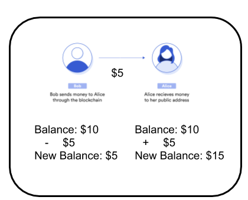
We can see when we send $5 from Bob to Alice, we can easily add $5 to Alice’s balance and subtract $5 from Bob’s. Every node on the network could easily reproduce this, get the same results, and end up in the same state.
But what if this wasn’t the case? Let’s imagine an imaginary blockchain where they use APIs to validate each other's transactions. Let’s say we want to send a variable amount based on the price of ETH to Alice from Bob’s account. We would have our contract call an API to get the price of ETH and then send that amount to Bob. When every other node goes to verify this, they also have to call this API.
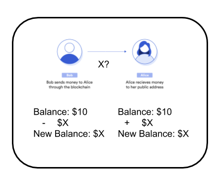
But what happens now? If they call the API even an instant later, the API could have changed — been depreciated, hacked, or for a number of other reasons — and all the nodes would get a different result. This means none of the nodes would be able to agree upon what the actual state of the blockchain is.
It’s for this reason the Ethereum blockchain and most blockchains are designed to be entirely deterministic. That means if we were to replay every transaction, we would end up in the correct state. If you include API calls or other non-deterministic sources into the infrastructure of blockchain, there is a good chance that the source will be depreciated, hacked, or even just broken, and we would not be able to validate transactions.
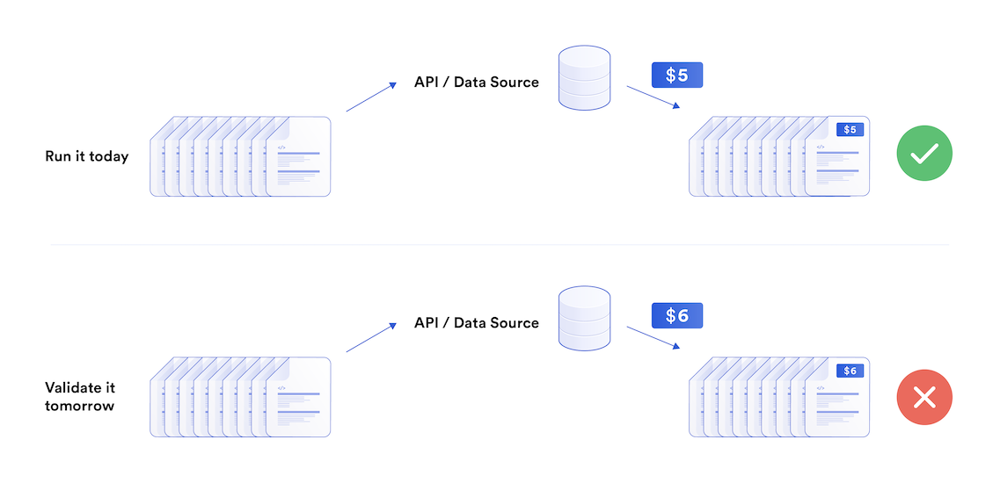
In blockchain, the mechanism for agreeing upon a data value is called consensus, and determinism is important so that nodes can come to a consensus. You might have heard of some of them, like Proof of Work (PoW) with Nakamoto Consensus or Proof of Stake (PoS) with Byzantine Consensus. Consensus is one of the key ingredients that make blockchain work in the first place.
But we need the blockchain world to connect with the real world. We need to get the price of ETH and other cryptocurrencies into a contract so we can have DeFi. We need to get the weather data so we can have decentralized trustless insurance. We need data to use blockchain for one of its most important purposes, smart contracts. So how do we bridge the worlds with this constraint?
How oracles solve this?: A blockchain oracle is any device or entity that connects a deterministic blockchain with off-chain data. These oracles enter every data input through an external transaction. This way, we can be sure that the blockchain itself contains all of the information required to verify itself. This is why oracles are known as blockchain middleware: They are the bridge between the two worlds. So that’s it, this is great! But what’s this I keep hearing about an “oracle problem”?
2. What Is the Oracle Problem? Let’s take a step back and remember why we are building on-chain in the first place. A huge reason we do anything on-chain is for decentrality. However, data has to come from somewhere.
If we import data from a single API, node, or source, we have now essentially removed the entire purpose of using blockchain in the first place. A centralized oracle means that one entity has the power over your smart contract, and your smart contract is now no better than a regular contract. And even if the centralized oracle has the best intentions, we’ve seen attacks already where a centralized oracle is hacked, attacked, outdated, or not maintained, and catastrophe ensues.
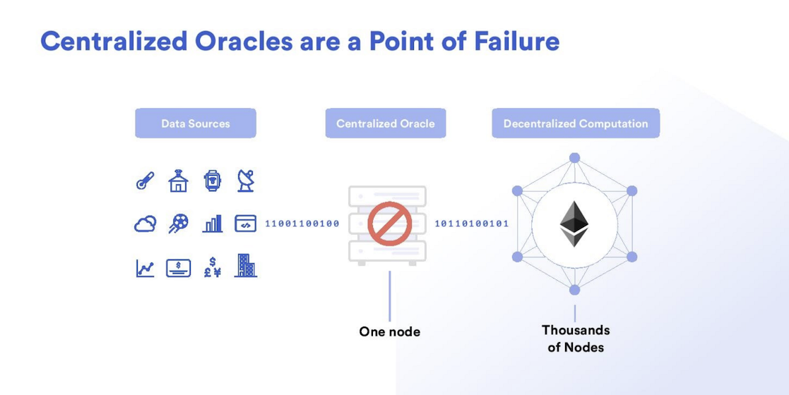
The oracle problem definition:
-
The oracle problem is these two pieces combined:
- Blockchains alone can’t access outside data.
- Using centralized oracles nullifies the advantage of smart contracts — and are major security risks.
A decentralized oracle or decentralized oracle network is a group of independent blockchain oracles that provide data to a blockchain. Every independent node or oracle in the decentralized oracle network independently retrieves data from an off-chain source and brings it on-chain. The data is then aggregated so the system can come to a deterministic value of truth for that data point. Decentralized oracles solve the oracle problem.
Chainlink is a framework for choosing your independent network of nodes to connect the real world’s data to the blockchain to enable smart contracts to reach their true potential. With this, we are leveraging the same reliable decentralized infrastructure concept the blockchain has, but for blockchain oracles. If nodes/sources are hacked, depreciated, or deleted, the network of Chainlink will leverage the decentralized network and carry on.
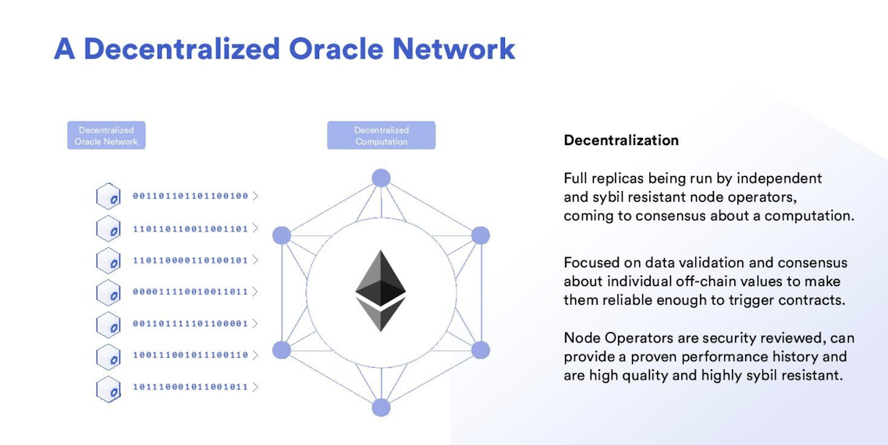
There are massive marketplaces leveraging the Chainlink technology to help you pick your network of independent nodes to pull your data from. This way, your smart contracts can easily never have a single point of failure.
The technology is blockchain agnostic and is constantly working to integrate with more blockchains so all blockchains can have access to reliable secure off-chain data. And best of all, the documentation is great for beginner engineers and experienced alike.
Using one blockchain oracle is a huge risk and chainlink offers a fantastic new ecosystem around data. Blockchain oracles are the key to unlocking the future that smart contracts have for us. Oracles also provide a way for blockchains to see into each other. This is known as interoperability, and is an important next step as well.
At the end of the day, in order for smart contracts to be the superior form of agreement, we need access to diverse and reliable data. This is why we need oracles.
Forking and Ommer blocks
- Forking in a Blockchain network means that the chain is split into different directions.
- Splitting of the chain can be intentional or unintentional.
- Intentional forks can happen when the Blockchain network has a software upgrade or any change happens in the Blockchain.
- Unintentional forks:
- Let’s assume that in a Blockchain network, two nodes competing to mine a block almost finish at the same time.
- This can happen in networks like Ethereum where the transaction time is very less.
- These two nodes may propagate their blocks to other nodes which may result in an unintentional fork.
- Eventually, only one chain is chosen based on the longest chain rule.
Let us summarise Ommer blocks in a few pointers:
- The way Ethereum is built, block times are much lower (~15 seconds) than those of other Blockchains like Bitcoin (~10 minutes). This enables faster transaction processing. One of the downsides of shorter block times is that more competing block solutions are found by miners. These competing blocks are also referred to as 'stale blocks' (i.e., the mined blocks do not make it to the main chain).
- Stale blocks can also be called Ommer or Uncle blocks.
In a process similar to the way Bitcoin creates orphan blocks, uncle blocks are created when more than one child block is created from a parent block. This situation is possible because all the nodes that maintain the ledger are not updated instantaneously when a new block is mined. Instead, you may have two blocks mined close together, but only one gets validated across nodes on the ledger. The one that is not validated is an uncle block.
KEY TAKEAWAYS:
- Uncle blocks are created in Ethereum blockchains when two blocks are mined and submitted to the ledger at roughly the same time. Only one can enter the ledger as a block, and the other does not.
- They are similar to Bitcoin orphans, but have an integrated use, unlike their Bitcoin counterparts.
- Miners are rewarded for uncle blocks in the Ethereum system, whereas orphan blocks in Bitcoin were not rewarded.
Understanding Uncle Block (Cryptocurrency): A blockchain is formed by a growing chain of blocks that store details of the various transactions occurring on the blockchain network. Miners continue to mine for the new blocks following the standard mining process implemented by the blockchain.
A newly mined block is appended to the blockchain after verification, and the miner who found this new block is entitled to the block reward. The block height, which indicates the length of the blockchain, increases after the addition of the new block.
However, at times, two different miners may generate a block simultaneously. This happens due to the working mechanism of the blockchain, which may not accept the newly identified blocks into the blockchain instantaneously.
Due to this delay, a situation arises where another miner solves for the same block and tries to add it to the network chain, which results in a temporary and unsettled state of the blockchain network as the various nodes try to build a consensus about which of the newly identified blocks to continue with and which one to reject.
The rejected ones are those which have a relatively lower share of proof of work and constitute the uncle blocks, while the ones with the larger share join the blockchain and work as a normal block.
Ethereum Rationale for Uncle Blocks:
In the Bitcoin blockchain, orphan blocks were a sunk cost: miners were not rewarded for producing them. Moreover, since the release of Bitcoin Core v.0.10 in early 2015 that eliminated the ability for nodes to recognize blocks without ancestry, Bitcoin orphan blocks are no longer possible.1
In the Bitcoin blockchain, orphan blocks were in essence bugs in the code—unintended and accidental byproducts of the mining process. Ethereum, on the other hand, incentivizes uncle block miners. This is done for several reasons:
To increase the number of transactions on the blockchain, Ethereum allows for the creation of more uncle blocks as a byproduct of shorter block times. Valid uncle blocks are rewarded to neutralize the effect of network lag on the distribution of mining rewards. Incentivizing uncles helps to decrease the centralization of incentives where large mining pools with high computing power end up claiming the majority of the rewards leaving nothing for individual miners. It also increases the security of the network by supplementing the work on the main blockchain by the work done in mining uncle blocks. Finally, the uncle blocks are purposefully incorporated into Ethereum's consensus method by a process called "GHOST: Greedy Heaviest Object Sub Tree." According to Philip Shen, "nodes will get the number of uncles mined for the last seven blocks in each subtree. That number is, in addition to the number of blocks in that subtree, used to calculate the tree’s weight; the heaviest tree is then said to be the 'correct' one."2
Uncles and Other Entities Outside the Patrilineal Tree:
The name “uncle” was chosen based on the lines of a family tree. Consider the blockchain as a family tree, with accepted blocks the genuine "parent-child" in the tree.
The term orphan was coined because, under the old Bitcoin system, a block could be submitted to a node that did not have a clear parent. In that case, the node would wait for confirmation from other nodes. This was a bug, not a feature.
For the reasons given above, Ethereum found a use for these extra blocks and incorporated them into its consensus mechanism, so the orphans were promoted to a metaphorical role in the family that showed they are not in a direct line of succession but still useful to the total system.
Soft fork and Hard fork
Forks in blockchain are points where the blockchain splits into multiple chains. Following are the two types of
forks in Ethereum:
Soft forks
A soft fork is a result of an intentional fork.
Only one chain remains valid as all the nodes adapt to the update.
A few examples of a soft fork can be: Increasing the block size or enhancing certain security protocols in the
blockchain.
A hard fork is a result of an intentional fork.
When the blockchain is split into two after forking, both the chains exist together. Users can choose which
blockchain to work on.
A few examples of a hard fork can be: Changing the consensus protocol of the blockchain or adding some new
rules.
Forking is the splitting of a Blockchain for various reasons.
The blockchain – the technology underlying Bitcoin - is a distributed ledger made up of “blocks” of data that is continuously growing, forming a single chain of blocks (hence block-chain).
Since Bitcoin is a decentralized network, participants in the network need to agree on a common set of rules to validate the transactions, in order to achieve consensus.
This, therefore, results in a single chain of verified data that everyone agrees is correct, or a single truth.
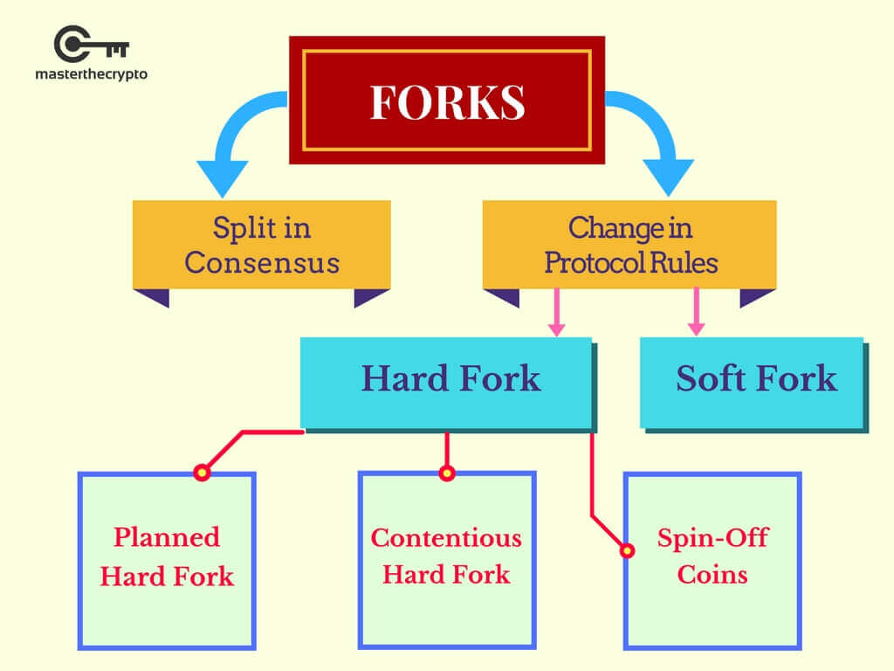
A fork occurs when the single blockchain splits into two, either due to:
A Split in Consensus:
As Bitcoin is a distributed and decentralized network, a fork occurs when miners discover a block at the same time, resulting in two split chains.
However, this is a temporary fork as the chain that finds the next block first becomes the longest chain and automatically becomes the truth. Therefore, the shorter chain will be abandoned by the network.
A Change in the Underlying Rules of the Protocol:
This represents a conscious change of the underlying codes by developers, and are permanent. The reason for changing the codebase can be due to:
Adding new features to enhance the network’s functionalities Changing a core rule (such as increasing the block size) Since the forks occurring in the first category (Split in Consensus) is temporary, the scope of focus (when someone talks about forks) should be in the second category, which is “A Change in the Underlying Rules of the Protocol”.
The forks within this category are permanent and require participants within the network to upgrade their Bitcoin software, so as to integrate the new changes into their current software.
A change in the underlying rules of the protocol is generally classified into 3 broad categories which are as follows:
Soft Forks:
A soft fork is a software upgrade that is backwards compatible with older versions. This means that participants that did not upgrade to the new software will still be able to participate in validating and verifying transactions.
It is much easier to implement a soft fork as only a majority of participants need to upgrade the software. All participants, whether they’ve updated or not will continue to recognize new blocks and maintain compatibility with the network.
A point to take note, however, is that the functionality of a non-upgraded participant is affected.
An example of a soft fork is when the new rule states that the block size will be changed from the current 1MB (1,000KB) to 800KB.
Non-upgraded participants will still continue to see that the incoming new transactions are valid. The issue is when non-upgraded miners try to mine new blocks, their blocks (and thus, efforts) will be rejected by the network.
Hence, soft forks represent a gradual upgrading mechanism as those who have yet to upgrade their software is incentivized to do so, or risk having reduced functionalities.
Past Examples of Soft Forks:
- BIP 66: A soft fork on Bitcoin’s signature validation
- P2SH: A soft fork that enabled multi-signature addresses in Bitcoin’s network
Hard Forks:
Hard forks refer to a software upgrade that isn’t compatible with older versions. All participants must upgrade to the new software to continue participating and validating new transactions.
Those who didn’t upgrade would be separated from the network and cannot validate the new transactions. This separation results in a permanent divergence of the blockchain.
As long as there is support in the minority chain – in the form of participants mining in the chain – the two chains will concurrently exist.
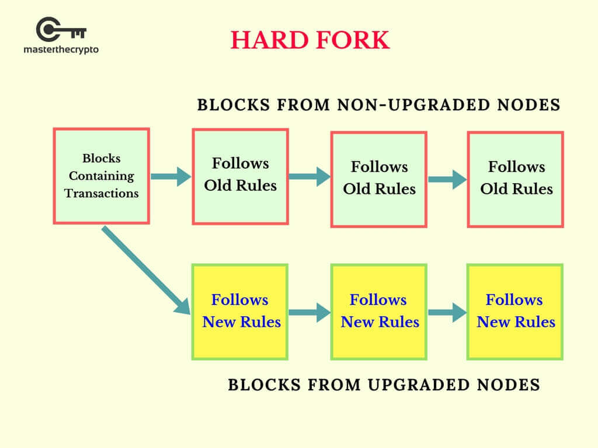
Hard forks can either be planned or controversial. Planned Hard Forks:
A planned hard fork is a protocol upgrade that has already been stated on the project’s roadmap since the start.
Since it is an upgrade to enhance the blockchain’s capabilities and features, the entire community – headed by the core developers – would transit to the new chain as the upgrade requires a change in the underlying codebase.
This will result in the death of the old chain, as it doesn’t make sense for anyone to support it due to a lack of incentives. Therefore, this will not entail the creation of a new coin.
Examples of Planned Hard Forks:
Ethereum’s Byzantium: The first phase of Ethereum’s 2-phase upgrading plan, Byzantium occurred in October 2017 and represents an upgrading of Ethereum’s blockchain base for better scalability and the integration of private transactions
Monero: In January 2017, Monero hard-forked to introduce an upgrade to its network by implementing a feature called Ring Confidential Transactions (RCT) to improve its privacy and security.
Contentious Hard Forks:
A contentious hard fork is due to disagreements within the community which results in a portion of them creating a new chain (and in their perspective a better one) by introducing major changes to the code, just like the creation of Bitcoin Cash.
Bitcoin is also in the midst of 2 hard forks, which is explained here: Upcoming Bitcoin Hardforks You Should Know: Bitcoin Gold & Segwit2X.
Examples of Contentious Hard Forks:
Bitcoin Cash: Bitcoin cash is a hard fork orchestrated by a portion of the community that wanted Bitcoin to scale better through increasing its block size from the current 1MB to 8MB.
This is to allow for more transactions to be processed, thereby reducing fees that users’ pay and minimizing the bottleneck of Bitcoin’s network as usage increased.
The hard fork resulted in the creation of a new currency called Bitcoin Cash.
Ethereum Classic: Ethereum had a hard fork to reverse the effects of a hack that occurred in one of their applications (called the Decentralized Autonomous Organization or simply, DAO).
However, a minority portion of the community was philosophically opposed to changing the blockchain at any costs, to preserve its nature of immutability.
As Ethereum’s core developers and the majority of its community went ahead with the hard fork, the minority that stayed behind and didn’t upgrade their software continued to mine what is now known as Ethereum Classic (ETC).
It’s important to note that since the majority transited to the new chain, they still retained the original ETH symbol, while the minority supporting the old chain were given the term Ethereum Classic or ETC.
Spin-off Coins:
Since Bitcoin’s protocol is open source, anyone can view the code base and make changes to it in the pursuit of creating a new coin with new features.
For instance, Litecoin was a fork of Bitcoin, created from changing the codebase of Bitcoin. The features of Litecoin include changes such as:
- Average of 2.5 minutes block time as compared to Bitcoin’s 10 minutes
- Different consensus algorithm: Scrypt instead of Bitcoin’s SHA 256
- Fixed coin supply of 84 million instead of Bitcoin’s 21 million
- Namecoin
- Peercoin
- Litecoin
- Dogecoin
- Auroracoin
The duplication of the chain due to the hard fork entitles holders of the old chain to receive new coins from the new chain. There are several methods of obtaining these forked coins which include (but aren’t limited to)
- Receiving them via airdrops
- Pointing one’s respective node toward the new forked network
- Distributing the private keys to the new network
Overall, hard forks are an inevitable aspect of cryptocurrency at this point. Some of them are legitimate, while some have been outright scams.
However, we must respect the right of the community to develop such projects if we are to stay in-line with the principles of decentralization and open-source code, which is how Satoshi released the Bitcoin code.
Ultimately, if one understands the principle of contentious hard forks, they should realize that it is really the community’s responsibility to audit itself – which means that this is perhaps the vision that Satoshi ultimately had when he was building Bitcoin and eventually disappeared.
There are plenty of misinformation and misconceptions that have been spread about hard forks, their nature, implementation, and acquisition by coin holders.
This has created a great deal of ire and cynicism within the larger community toward such projects. However, it is important to remember that some projects are legitimate and, in some cases, even enhance the original software that was released by the developers.
With all the controversies surrounding hard forks, there are definitely benefits of forks towards the crypto community.
Forks the community’s way of ensuring that they’ll always have a voice; investors and miners have recourse in the instance that they come to a disagreement with the coin's development team.
While there will always be individuals in the community and supporters of the legacy chain that despise any and all hard forks and take the move to be a form of ‘betrayal’, we must all remember that we are essentially ‘knock offs’ of the original idea posited by Satoshi in his Bitcoin creation.
And even in that instance, Satoshi owes many of his ideas, including Proof of Work, to the innovations of prior developers that had explored the creation of an online, digital currency.
Logs and Receipts
- The logger’s account address,
- A series of topics that represent various events carried out by this transaction, and
- Any data associated with these events.
Logs stored in the header come from the log information contained in the transaction receipt.
Ethereum generates a receipt for every transaction. Like you would expect, each receipt contains certain information about the transaction. This receipt includes items like:
- The block number
- Block hash
- Transaction hash
- Gas used by the current transaction
- Cumulative gas used in the current block after the current transaction has executed
- Logs created when executing the current transaction etc.
State transition in Ethereum - Checks
Whenever a transaction occurs, the state of Ethereum changes. Let’s look at the checks that take place before the state of the network is changed as a result of a transaction over the network.
A transaction has to go through the following checks before being executed:
- The transaction must be a properly formatted.
- It should have a valid transaction signature.
- It should have a valid transaction nonce. Recall that the nonce of an account is the count of transactions sent from that account. To be valid, a transaction nonce must be equal to the sender account’s nonce.
- The transaction’s gas limit must be equal to or greater than the intrinsic gas used by the transaction. The intrinsic gas includes:
- A predefined cost of 21,000 gas for executing the transaction
- A gas fee for the data sent with the transaction (4 gas for every byte of data or code that equals zero, and 68 gas for every non-zero byte of data or code)
- If the transaction is a contract-creating transaction, an additional 32,000 gas to be sent
- The sender’s account balance must have enough Ether to cover the 'upfront' gas costs that the sender must pay
State Transition in Ethereum - Process
A transaction on Ethereum is executed in the following manner:
- First, the upfront cost of execution is deducted from the sender’s balance.
- Then, the nonce of the sender’s account is increased by 1 to account for the current transaction.
- Next, the transaction starts executing. Throughout the execution, Ethereum keeps track of the 'substate',
which is a way to record information accrued during the transaction that will be needed immediately after
the transaction is complete. Specifically, it contains:
- Self-destruct set: a set of accounts (if any) that will be discarded after the transaction completes
- Log series: archived and indexable checkpoints of the virtual machine’s code execution
- Refund balance: the amount to be refunded to the sender's account after the transaction
- The various computations required by the transaction are processed.
- Once all the steps required by the transaction have been processed and assuming there is no invalid state,
the state is finalised by determining the amount of unused gas to be refunded to the sender.
- The sender is also refunded some allowance from the 'refund balance'.
- First, the upfront cost of execution is deducted from the sender’s balance.
- Then, the nonce of the sender’s account is increased by 1 to account for the current transaction.
- Next, the transaction starts executing. Throughout the execution, Ethereum keeps track of the 'substate', which is a way to record information accrued during the transaction that will be needed immediately after the transaction is complete. Specifically, it contains:
- Self-destruct set: a set of accounts (if any) that will be discarded after the transaction completes
- Log series: archived and indexable checkpoints of the virtual machine’s code execution
- Refund balance: the amount to be refunded to the sender's account after the transaction
- The various computations required by the transaction are processed.
- Once all the steps required by the transaction have been processed and assuming there is no invalid state, the state is finalised by determining the amount of unused gas to be refunded to the sender.
- The sender is also refunded some allowance from the 'refund balance'.
Alt Coins vs tokens
All these characteristics are inherent within Bitcoin, and since the cryptocurrency space was kickstarted by Bitcoin’s creation, any other coins conceived after Bitcoin is generally considered as a cryptocurrency, though most do not fulfill the aforementioned characteristics of an actual currency. The most common categorization of cryptocurrencies are:
- Alternative Cryptocurrency Coins (Altcoins)
- Tokens
Alternative cryptocurrency coins are also called altcoins or simply “coins”. They’re often used interchangeably. Altcoins simply refers to coins that are an alternative to Bitcoin. The majority of altcoins are a variant (fork) of Bitcoin, built using Bitcoin’s open-sourced, original protocol with changes to it's underlying codes, therefore conceiving an entirely new coin with a different set of features.
Some examples of altcoins that are variants of Bitcoin's codes are Namecoin, Peercoin, Litecoin, Dogecoin and Auroracoin.
There are other altcoins that aren't derived from Bitcoin’s open-source protocol. Rather, they have created their own Blockchain and protocol that supports their native currency.
Examples of these coins include Ethereum, Ripple, Omni, Bitshares, NEO, Waves and Counterparty.
A commonality of all altcoins is that they each possess their own independent blockchain, where transactions relating to their native coins occur in.
A central concept of modifying open source codes to create new coins is called hardforks
2.Tokens: Tokens are a representation of a particular asset or utility, that usually resides on top of another blockchain.
Tokens can represent basically any assets that are fungible and tradable, from commodities to loyalty points to even other cryptocurrencies!
Creating tokens is a much easier process as you do not have to modify the codes from a particular protocol or create a blockchain from scratch.
All you have to do is follow a standard template on the blockchain - such as on the Ethereum or Waves platform - that allows you to create your own tokens.
This functionality of creating your own tokens is made possible through the use of smart contracts; programmable computer codes that are self-executing and do not need any third-parties to operate. 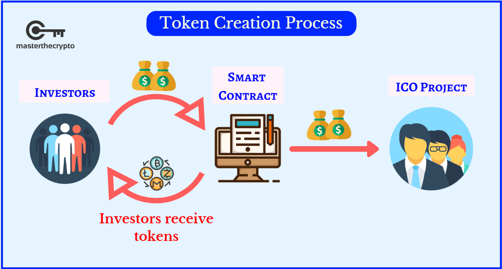
Tokens are created and distributed to the public through an Initial Coin Offering (ICO), which is a means of crowdfunding, through the release of a new cryptocurrency or token to fund project development.
It is similar to an Initial Public Offering (IPO) for stocks, with critical distinctions which are explained in this article. Many are crazy over ICOs as they represent a great way of identifying interesting projects that can provide great financial returns.
Fun Fact: A template for token creation is wonderful since it provides a standard interface for
interoperability
between tokens. This make it so much easier for you to store different type of coins within a single wallet. An
example is the ERC-20 standard on the Ethereum blockchain, which has is used by over 40 tokens
Altcoins are just like your currency coins. Let’s understand this from a simple example. If you have a ₹10 coin, you will say that you have a coin whose value is 10 rupees. Similarly, if you have a 10 Ether Altcoin, it means that you have a digital coin whose value is 10 Ethers. Tokens, on the other hand, are like vouchers. If you have an Amazon voucher, then you can use it to buy things only from Amazon. You cannot redeem that voucher on Flipkart or any other retail shop. Similarly, if you have a token of a particular application, you can only use it for that particular purpose as defined by the application.
In other words,
- Think of Altcoins as currency (USD, Euro etc.) that you can use to buy a whole range of products and services.
- Tokens have a specific purpose. They don't have value outside that use, but they still have value as they represent the use of a service that can be bought using the tokens.
Ethash
The Ethash algorithm is used to dynamically adjust the mining difficulty of the blockchain that implements it. In other words, Ethash determines roughly how much computational resources should be spent in order for a miner to be able to find the nonce that allows them to propose a new block to add to the blockchain.
Ethash is not itself a cryptographic hash function. The hash function used by Ethereum is a variant of the SHA3 hash and is called Keccak-256. The hash was developed at the same time as the SHA3 standard and received a late change in the padding of the finalized hash algorithm. Ethereums SHA3-256 and SHA3-512 are not standard SHA3 hashes, and are often referred to as Keccak-256 and Keccak-512.
The Ethash algorithm generally follows a route in which a seed can be computed for each block by scanning through block headers, and which can compute a 16MB pseudorandom cache. Light clients then store the cache, which eventually is generated into a 1GB dataset and is then stored by full clients and miners. The dataset grows linearly over time and verification is done on the dataset until it is updated. The large dataset is updated once every 30,000 blocks.
The parameters for Ethash cache and datasets depend on the block number, as the cache and dataset sizes grow linearly. The highest prime below the linearly growing threshold is taken in order to reduce risk of accidental regularities leading to cyclic behaviors.
How does the Ethash algorithm work?
The most well-known coin to implement Ethash is Ethereum (ETH), for which this algorithm was initially created.
Its most prominent design goal is to be ASIC resistant, preferring to accommodate GPU-based mining.
The algorithm uses a large dataset that is periodically regenerated, and slowly grows over time. It fits in the VRAM of a modern GPU. This element of its operation is derived from the “Dagger” algorithm, and the large, varying dataset contributes to ASIC resistance.
The other part of ASIC resistance is achieved through a derivative of the “Hashimoto” algorithm, which exerts a lot of memory intensity in terms of random-access reads from the dataset. The inputs from the dataset are run through a derivative of the “Keccak” algorithm to output potential block solutions. This is well suited to the large core counts in modern GPUs.
Miners commonly make significant memory clock frequency increases on their GPUs to achieve considerable improvements in Ethash hash rates. Power or temperature limits, along with manually-set high fan speeds are sometimes seen, to offset the associated heat output.
It’s common to see custom-built PCs specified with 6 or more high-end GPUs for mining Ethereum, with minimal emphasis on the other components, to get the most cost-effective mining farms.
SUMMARY:
Ethash is a proof-of-work mining algorithm implemented by the Ethereum network and Ethereum-based cryptocurrencies. Ethash is a successor of the previous Ethereum algorithm called Dagger-Hashimoto and is, in fact, an upgrade of it. However, current development stages of both algorithms made them too different to be considered the same algo. Ethash uses "Keccak-256" and "Keccak-512" hash algorithms which leads to a little bit of confusion due to the simultaneous development SHA-3 (Secure Hash Algorithm 3) cryptographic standards along with Ethash development.
SHA-3 standard is a part of the more extensive cryptographic primitive family called Keccak, which also referred to as synonym of SHA-3. Sometimes the Ethash’s hash functions are referred to as "sha3_256" and "sha3_512", but the Keccak version of Ethereum is not a standard SHA-3 hash algorithm.
Ethash was developed with a strong focus on protection from ASIC (Application Specific Integrated Circuits) miners but the outstanding popularity of Ethereum - the main Ethash-based crypto, resulted in increased interest of ASIC developers in manufacturing Ethash-compatible miners. Eventually, in April 2018, first ASIC miners for Ethash were announced by Bitmain. However, the community of Ethereum project strongly opposed the perspective of ASIC dominance in the network which resulted in discussions of “bricking” the devices. In terms of the mining hardware, “bricking” means an establishment of the technological upgrade of the network that makes the hardware useless or even broken if its connected to the network. Such proposals forced ASIC miners to conceal their presence and lower the hashing power of their devices. Ethereum's plans of switching the proof technology from proof-of-work to POW/POS (proof-of-stake) hybrid makes ASIC development for Ethash very risky for the manufacturers.
Geth, Geth CLI
Installation:
You can download and install Go Ethereum (Geth) directly from Download Geth page. Installation of Geth from terminal in Ubuntu:
You can install geth from Ubuntu terminal with the following commands,
sudo apt-get install software-properties-common
sudo add-apt-repository -y ppa:ethereum/ethereum
sudo apt-get update
sudo apt-get install Ethereum
Create a separate folder to store the ethereum network data. To start Ethereum node using the Geth console, you
need to type the below command,
username@ubuntu:~/Gethtut$ geth the above command will connect to the main Ethereum network and try to download the blocks. This will consume huge amount of memory space in your hard disk in GBs. If you think it consumes too much of disk space then you can run Ethereum in light mode using geth --light command. This will download only block headers without transaction data. You can check the status of sync to the main network by typing command inside geth console,
> eth.syncing
{
currentBlock: 3165668,
highestBlock: 5157070,
knownStates: 3180,
pulledStates: 214,
startingBlock: 3165125
}
Running Ethereum Node in Private Blockchain network:
You can create a private Ethereum network yourself using geth. An Ethereum network starts with its blockchain with
a root block called genesis block. Genesis block doesn’t contain any transactions.
You can create Genesis block storing the below json data in a file and running the command,
geth --datadir ./data init genesis.json Genesis.json file:
{
"config": {
"chainId": 2018,
"homesteadBlock": 0,
"eip155Block": 0,
"eip158Block": 0
},
"alloc" : {},
"coinbase" : "0x0000000000000000000000000000000000000000",
"difficulty" : "10",
"extraData" : "",
"gasLimit" : "0x2fefd8",
"nonce" : "0x0000000000000042",
"mixhash" : "0x0000000000000000000000000000000000000000000000000000000000000000",
"parentHash" : "0x0000000000000000000000000000000000000000000000000000000000000000",
"timestamp" : "0x00"
}
ChainId is the network id of Ethereum network. You can choose any value higher than 4 as chainid because 1–4 are
defaults for main and test networks. Creating account in Ethereum network,
geth --datadir ./data account new
You need to enter the password and make sure you don’t forget it. This will create a key file in data/keystore which contains your public and private addresses. Make sure you store it somewhere safe. To list all the accounts created. Type the command,
geth --datadir ./data account list
You can start the ethereum node by entering into the console,
geth --datadir ./data console
Running two instances of Ethereum node server leads to data corruption in Ethereum database. So you can use geth attach to connect to the same node.
For example,
C:\> geth attach ipc:/home/Gethtut/data/geth.ipc Welcome to the Geth JavaScript console! instance: Geth/v1.8.1-stable-1e67410e/windows-386/go1.9.2 modules: admin:1.0 debug:1.0 eth:1.0 net:1.0 personal:1.0 rpc:1.0 txpool:1.0 web3:1.0
This will open Javascript console where in you can use Javascript command for interacting with Ethereum network. To come out of the geth console you can use exit command. This will stop the Ethereum node. You can also create a new account inside the geth console with the command,
personal.newAccount()
Now we have Ethereum accounts but no balance in the accounts. In order to get some ether we need to perform mining. Mining is a key component in Ethereum network where multiple miners compete to create a new block. The corresponding miner will be rewarded with some ether. Lets start mining with 1 thread,
miner.start(1)
If you get any error like this,
Error: etherbase missing: Etherbase must be explicitly specified
Then you need to set the Etherbase. Etherbase, also called coinbase, is the public key of an Ether account, which is needed by the miner to receive mining reward Ether money. You can set the Etherbase by following commands,
> base = eth.accounts[0] "0x05d4e1a499775ce9d681abd50bda655c7b5ccb90" > miner.setEtherbase(base) true > miner.start(1) null
Running “geth” miner with 1 thread is too slow to generate new blocks. So you can run geth miner with 4 threads to make the mining process faster. Also lower the difficulty level if you need mining process faster and get more ether.
Get the balance of the account, eth.getBalance(eth.accounts[0])
This will give the balance in Wei. To get the balance in ether type the below command,
web3.fromWei(eth.getBalance(eth.accounts[0]), “ether”)
To send ether from one account to other, create a second account to which you want to send ether by using
personal.newAccount()
and send the ether using sendTransaction command.
eth.sendTransaction({from:eth.accounts[0], to:eth.accounts[1], value: web3.toWei(4, “ether”)})
This will send 4 ether to the second account. This transaction will be in transaction pool until miner picks up. If you get any error like this,
Error: authentication needed: password or unlock at web3.js:3143:20 at web3.js:6347:15 at web3.js:5081:36 at
You can unlock the account using,
personal.unlockAccount(eth.accounts[0], ***password***)
Then start the mining process using miner.start(). Then check the balance in the second account to see if the transaction of transferring of 4 ether is processed.
eth.getBalance(eth.accounts[1])
Ethereum Virtual Machine(EVM)
Ethereum Virtual Machine, or EVM, is a virtual machine that enables a computer or a machine to run smart contracts that are compiled to the EVM bytecode.
EVM is a runtime environment on which the smart contracts are executed. The smart contract codes need to be compiled to the EVM bytecode before they can be executed in the EVM. EVM is present on every node in the blockchain network. The nodes in the Ethereum network are known as Ethereum clients. The two major properties of EVM are that it is:
- Isolated: The isolated nature of EVM enables users to run programs (smart contracts) without being affected by the system or platform on which they run. It also ensures that the programs running are not affected by any other application on the system.
- Sandboxed: Being a sandbox, EVM is an isolated testing environment that enables users to run programs (smart contracts) without affecting the system or platform on which they run. Hence, they don't affect other applications on the platform.
Ethereum Developer community proposes improvements that can be done to the Ethereum blockchain network.
EIP stands for Ethereum Improvement Proposal. The Ethereum Development Community keeps making such proposals,
which are mainly either any new features or bug fixes. If the majority of the Ethereum Community accepts a
proposal, then that EIP becomes a part of the next version of the EVM, which is then updated or installed on
every Ethereum client or node. The first version of EVM was called Frontier. And the current version of EVM is
called St. Petersburg.
There are three locations for storing data in the EVM. They are:
- Storage: Storage is a persistent storage space present on every Ethereum account. It forms the storagehash, which we learnt about in the segment on Ethereum Accounts. You can think of storage like a hard disc or SSD. The Storage retains its value when the computer or machine is not running.
- Memory: Memory is a volatile storage space. Whenever a transaction comes in, some space is allocated to the transaction to execute, and when the transaction ends, its data is deleted from memory and space is freed. The freed space is then made available for use by the next incoming transaction. You can think of it as a computer's RAM. It disappears when the computer or machine is not running.
- Stack: The EVM is a simple stack-based architecture. All the computations on the EVM are performed on the stack. The stack has a maximum capacity of 1,024 items and the size of each item on the EVM stack is 256 bits. If you run out of stack, then the contract execution will fail. The compiler generally uses it for intermediate values in computations and other scratch quantities. Once a contract execution is finished, the items containing the contract data are removed from the stack.
Steps to setup private Ethereum Blockchain
Truffle
Wallets in ethereum
Sharding in ethereum
Metamask Setup
Token vs Crypto currency
ERC 20 Token
ERC 777 Token
ERC 721 Token
Ethereum Smart Contracts
WHAT IS A SMART CONTRACT?
A "smart contract" is simply a program that runs on the Ethereum blockchain. It's a collection of code (its
functions) and data (its state) that resides at a specific address on the Ethereum blockchain.
Smart contracts are a type of Ethereum account. This means they have a balance and they can send
transactions
over the network. However they're not controlled by a user, instead they are deployed to the network and run
as
programmed. User accounts can then interact with a smart contract by submitting transactions that execute a
function defined on the smart contract. Smart contracts can define rules, like a regular contract, and
automatically enforce them via the code. Smart contracts can not be deleted by default, and interactions
with
them are irreversible.
PERMISSIONLESS
Anyone can write a smart contract and deploy it to the network. You just need to learn how to code in a
smart
contract language, and have enough ETH to deploy your contract. Deploying a smart contract is technically a
transaction, so you need to pay your Gas in the same way that you need to pay gas for a simple ETH transfer.
Gas costs for contract deployment are far higher, however.
Ethereum has developer-friendly languages for writing smart contracts:
- Solidity
- Vyper
- Serpent
- LLL
- Yul
- Yul+
Ethereum smart contracts are written in high-level languages such as Solidity, Vyper, Serpent and LLL. These are then compiled to the EVM bytecode by their respective compilers. And then this EVM bytecode is executed in the Ethereum Virtual Machine (EVM).
SOLIDITY
Object-oriented, high-level language for implementing smart contracts.
Curly-bracket language that has been most profoundly influenced by C++.
Statically typed (the type of a variable is known at compile time).
Solc is the compiler that Solidity uses to compile the Solidity code to the EVM bytecode.
Supports:
Inheritance (you can extend other contracts).
Libraries (you can create reusable code that you can call from different contracts – like static functions in
a
static class in other object oriented programming languages).
Complex user-defined types.
Smart Contract structure :
'.sol' is the extension used for a file in Solidity.
Every '.sol' file or smart contract file has the following main components:
- One or more pragma statements: The main purpose of the Pragma statements is to define the Solidity version number. The Solidity compiler, that is, solc, checks for this version number and then converts the Solidity Code to the EVM bytecode accordingly. The version number is important since new functionalities are added continuously and some old functionalities keep getting phased out.
- One or more import statements: Import statements are used when you want to use the functions defined in some other sol file in your sol file.
- One or more contract definitions: Contract is defined using the contract keyword followed by the series of functions that you write inside the curly brackets.
Data types available in Solidity: State variables can be defined inside a smart contract using one of the available data types in Solidity. The main data types in Solidity are:
- int: Signed and unsigned integers of various sizes. uint8 to uint256 and int8 to int256.
- bool: Its values are true and false.
- fixed: Signed and unsigned fixed point numbers of various sizes. They can be declared as either fixed or unfixed. Fixed point numbers are not fully supported by Solidity yet. They can be declared but cannot be assigned to or from.
- address: Remember from the key-value pairs of Ethereum accounts. Key was a 20-byte string, which represented the account address. It is declared as address and holds a 20-byte value (the size of an Ethereum address).
- enum: Enums provide a way to create a user-defined type in Solidity. They are declared using enum.
- array: Arrays can have a compile-time fixed size or they can be dynamic. An array of a fixed size n and element type A is written as A[n], and an array of a dynamic size is written as A[].
- fixed-size byte array: It refers to a fixed-size byte array, which goes from 1 to 32. In other words, the size of the array can range from 1 to 32 bytes. It can be declared as bytes1, bytes2, ...., bytes32.
- dynamic sized byte array: You can declare a dynamic sized byte array with maximum size up to 256 bytes. You can declare it as bytes.
- String: String is another type of dynamic sized array that is used for an arbitrary-length string (UTF-8) data. You can declare it as string.
- mapping: Mapping types are declared as mapping(_KeyType => _ValueType). Here _KeyType can be almost any type, except a mapping, a dynamic sized array, a contract, an enum and a struct. _ValueType can actually be any type, including mappings.
- Struct: A struct data type is a group of multiple data types combined together. Solidity provides a way to define new types in the form of structs.
- Public: If a state variable is defined as public, then it can be accessed from outside the contract namespace. In other words, it can be accessed from any other contract on the network.
- Private: If a state variable is defined as private, then it can be accessed only inside the smart contract in which it is defined. Even if you import this contract in some other contract, the state variable with private visibility cannot be used from the contract inheriting the parent contract.
- Internal: A variable with internal visibility can only be used from the contract in which it is defined or the contract inheriting the properties of the parent contract. So if a contract 'A' inherits a contract 'B', then it can use the variables in 'B' with the internal visibility type but not with the private visibility type. The variables with public visibility can be used by any contract on the network.
pragma solidity 0.8.7;
contract VendingMachine {
// Declare state variables of the contract
address public owner;
mapping (address => uint) public cupcakeBalances;
// When 'VendingMachine' contract is deployed:
// 1. set the deploying address as the owner of the contract
// 2. set the deployed smart contract's cupcake balance to 100
constructor() {
owner = msg.sender;
cupcakeBalances[address(this)] = 100;
}
// Allow the owner to increase the smart contract's cupcake balance
function refill(uint amount) public {
require(msg.sender == owner, "Only the owner can refill.");
cupcakeBalances[address(this)] += amount;
}
// Allow anyone to purchase cupcakes
function purchase(uint amount) public payable {
require(msg.value >= amount * 1 ether, "You must pay at least 1 ETH per cupcake");
require(cupcakeBalances[address(this)] >= amount, "Not enough cupcakes in stock to complete this purchase");
cupcakeBalances[address(this)] -= amount;
cupcakeBalances[msg.sender] += amount;
}
}